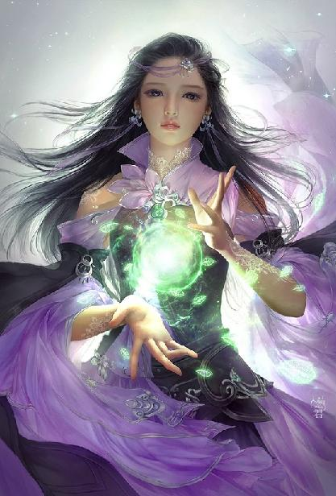

第72集·家国柱石
汉国篇（24/28）
出版日期：2018-01-08
【本集内容简介】
盛姬竟然是巫宗的人？定陶王是被黑魔海的御姬奴养大的？这样的天子还能留吗？杀？还是不杀？
程宗扬索性组建天子教育委员会，帝师人人有份，十几门课程一起上，发誓要让小天子沉迷在学习的快乐中，无暇他顾！
假设你是跟一位天子谈判，要拿什么换取他的天下……该当出价几何？
※ ※ ※ ※ ※

封面人物：小紫
寝宫内温暖犹如阳春，程宗扬却觉得一股刺骨的寒意从脚底升起，身体仿佛坠入冰窖，连头发都一根根竖了起来。
天子……盛姬……
黑魔海……御姬奴……
短暂的呆滞失神之后，一股夹杂着羞耻的狂怒猛然涌上心头。剑玉姬这个该死的贱人！自己居然又被算计了！
自己拼死拼活，好不容易摆平各方势力，把定陶王送上帝位，这会儿你居然告诉我，这娃是被黑魔海的御姬奴养大的？我在前面玩命，剑玉姬那贱人躲在幕后坐享其成——合着自己这么长时间，全是给剑玉姬那贱人数钱的？这还有天理吗？
一次两次还可以说自己不小心，可一而再、再而三地被剑玉姬算计，难道自己就那么蠢吗？在剑玉姬眼里，自己该是个多么可笑的大傻瓜？
阮香凝脸色雪白，嘴唇不住发抖。她看着主人的目光由错愕、震惊，再到羞愤，然后他的视线落在自己身边，流露出毫不掩饰的杀意。
阮香凝僵着身子，一动也不敢动。
睡在自己身旁的，正是定陶王刘欣，如今的天子。
程宗扬一手握住从未离身的环首刀，强烈的杀意喷薄而出。就在这一瞬间，他心头杀机四起，直想一刀劈出，把定陶王当场斩杀。
杀了他！只要杀了他，剑玉姬瞒天过海的绝妙好计就成了泡影！
杀了他！与其替人作嫁，不如一拍两散，大家从头玩起！
可程宗扬握住刀柄，怎么也拔不出来。
……可他只是个毛都没长齐的小屁孩啊！
自从来到这个世界，自己的道德水准就一路狂跌不止，以惊人的速度堕落。就在不久之前，自己还粗鲁地强暴了一个被俘的女奴——不但没有任何心理负担，反而觉得很爽。
可是对一个幼童下手，实在超过了自己的底线。
如果不杀，就意味着剑玉姬笑到了最后。自己不但瞎忙一场，还白白替剑玉姬流血流汗。
杀？还是不杀？
程宗扬的视线落在那个熟睡的孩童身上，久久未曾移开。
定陶王对近在咫尺的威胁毫无所觉，他小嘴微微张开，睡得正香。睡梦中，他小手动了一下，本能地揪紧阮香凝的衣角，丝毫不知自己正面临着生死，即将成为短短数日内第二个被弑的天子。
身后忽然传来一声轻响。
程宗扬紧握的长刀脱鞘而出，闪电般往后劈去。
吕雉不知何时坐起，正侧耳倾听着这边的动静。长刀以毫厘之差在她鼻尖停住，刀风荡起她的发丝，使她眼前缭绕的黑雾一阵波动。
吕雉意识到面前的危险，下意识地睁大双目，身体一动也不敢动。
程宗扬一寸一寸收回长刀，然后头也不回地出了寝宫。
※ ※ ※ ※ ※
“你早就知道了！对不对？”
面对程宗扬气急败坏的怒吼，小紫一脸无辜地眨了眨眼睛，“什么？”
“盛姬！定陶王身边那个盛姬——”程宗扬叫道：“居然是黑魔海的人！死丫头！你为什么不告诉我？”
“没关系啊，”小紫毫不在意地说道：“反正她已经死掉了。”
“怎么没关系！”
只有在死丫头面前，程宗扬才可以毫无顾忌地抓狂，“定陶王可是被她养大的！我拼死拼活，好不容易把定陶王送上帝位，等一转脸，发现那小屁孩是黑魔海养出来的！干！怪不得剑玉姬那贱贱贱贱人会那么好说话！转手就把定陶王送过来！我还以为那贱人犯傻了！干！我才是最傻的那个！大爷我辛辛苦苦折腾这么久，全都为她作了嫁衣——干！那贱人肚子里不知道笑成什么样呢！”
程宗扬肺都快气炸了，洛都之乱，自己已经胜券在握，结果被人釜底抽薪，能不着急吗？这段时间自己容易吗？像个老农民一样，辛辛苦苦翻土，辛辛苦苦播种，辛辛苦苦浇水捉虫，还要防风遮雨赶小偷打劫匪……好不容易结出果实，到了收获的季节，终于满心欣慰地松了口气，仔细一瞧——好嘛，剑玉姬那贱人不知道什么时候把种子给换了。原本种的西瓜，结果种出来个倭瓜！
这就好比唐僧历经九九八十一难，终于到了西天大雷音寺，一个头磕下去，佛祖却一把扯开袈裟，露出身上绑的炸弹，高呼一声：“安拉胡阿克巴……”
五雷轰顶，天崩地裂，日月无光，江河变色……自己没有当场吐出血来，已经是养气有成了。
剑玉姬这一手截胡的贱招，实在太险诈也太恶心了。
杀掉定陶王，自己下不去手；装作没有这回事，自己咽不下这口气。何况一个被黑魔海养大的天子，想想都觉得恐怖。唯一的选择只有废掉定陶王，另立新君。
好消息是定陶王还没有正式登基，严格意义上来说，并不算废立天子。坏消息是天子也不是树上结的果子，随便摘一个就能用的。
自己为了定陶王能继承天子之位，可以说殚精竭虑，呕心沥血。连日来死守长秋宫，跟各方势力合纵连横，杀得人头滚滚，好不容易才把小家伙的帝位确定下来，得到了各方的认可，这会儿自己说想换人？别说旁人答不答应，就算旁人眼睛全都瞎了，只当没看到，自己也得在一天之内找出来个能取代定陶王的宗室子弟。
能找到吗？程宗扬毫无信心。只看成光和盛姬就知道，剑玉姬在汉国经营多年，绝不是一句空话。就算自己真能在一天之内挑出来一个，那人有八成可能还跟剑玉姬那贱人脱不了干系。
程宗扬这会儿终于体会到，什么叫骑虎难下，进退两难。
“安啦。”小紫道：“定陶王还是个小娃娃，巫宗可以养，程头儿你也可以养啊，说不定你养的比巫宗好呢？”
“开什么玩笑！”程宗扬脱口而出，心下却不由一动。
对啊，那贱人擅长玩阴谋诡计，自己为什么不能来明的，光明正大地培养定陶王呢？再怎么说，定陶王也只是个三岁的小娃娃，完全是一张白纸。剑玉姬想往上面画魔鬼，画毒蛇，画长角的鳄鱼，自己也完全可以往上面写“圣人曰”，“程子曰”，写“大学之道在明明德，在亲民，在止于至善……”
倒是自己一见到剑玉姬的黑手，就本能地想退避防备，才真是犯傻，等于把这张白纸塞给剑玉姬，让她想画乌龟就画乌龟，想画老鼠就画老鼠。
程宗扬在殿内绕圈踱着步，脸色阴晴不定。不能换人，那就只能硬着头皮继续挺定陶王。死丫头说的也没错，定陶王现在是在自己手里，怎么教育他，自己完全可以占据主动，竭尽全力把定陶王培养成一个光明磊落、精明强干，同时不失仁慈善良的君主。
话是这么说，可反过来这么一想——合着自己这是跟剑玉姬那贱人一块儿养孩子呢？
这事儿怎么就这么操蛋呢？！
程宗扬眉头越皱越紧，最后几乎拧成一团，活活憋出来一脸便秘的表情。看到了吧，剑玉姬那贱人才是真端着屎喂自己吃，自己还不得不吃。跟剑玉姬这贱人一比，霍子孟那老狐狸简直是道德楷模！
主子破天荒地冲着紫妈妈发火，把殿内的侍奴都给吓住了，连阮香琳在内，所有人都悄悄退走，生怕卷到两位主子的争吵中，成为倒霉的炮灰。
等殿内安静许久，惊理才满心忐忑地进来，小心禀道：“巫宗的人来了。”
“不见！”程宗扬恨声道：“就说我病了！十天半月起不了床。那贱人要是有事，让她上床跟我说！”
“来的是仇尊者。”
程宗扬心头滴血。连色诱都省了，直接把仇雍那个老东西打发过来，这贱人怎么就能这么贱呢？
小紫笑道：“我去见他好了。”
自己这会儿怒火高炽，实在不适合跟巫宗的人谈判，程宗扬挥挥手，让死丫头去对付仇雍那个老家伙。
惊理赶紧抱起雪雪，陪紫妈妈过去见客。
“唉……”
程宗扬往榻上一靠，一肚子的愁肠都快打成结了。
“老爷，请用茶。”孙寿捧着茶盏过来，战战兢兢地说道。
程宗扬瞟了她一眼，一手拿过茶盏，一口喝干，然后把茶盏一丢，伸手揽住她的腰肢，放在膝上。
孙寿只披了一条薄纱，里面光溜溜的娇躯像白玉琢成一样光洁白美，玲珑有致。程宗扬将她揽在怀中，一边想着心事，一边把手伸进轻纱，抓住她一对雪滑的玉乳，在手中把玩。
孙寿身份虽然比不上太后，平常也是锦衣玉食、高高在上，突然间沦落为一个低三下四的小丫鬟，被一帮身份低微的奴婢随意欺负，心下难免有几分委屈。直到刚刚过去的洛都之乱，眼看着往日钟鸣鼎食、权倾朝野的世家豪族，转瞬间家破人亡，连自家名字都在被诛之列，孙寿这才惊觉，自己已经身处绝境，天下之大，能够庇护自己的，唯有这位主人了。
那些姐姐们审案时的笑闹，虽然是在紫妈妈授意下，设法为主人解忧，但孙寿知道，汉国的深牢大狱绝不是那么好受的。像她这样有些姿色，又论罪当诛的贵妇，一旦入狱待罪，想要保存体面，唯有自尽一途。否则就是自愿抛弃名节，在狱卒们的淫威下忍辱偷生。相比之下，成光还算幸运，那些姐姐们只是调笑取乐，不像真正的狱卒那样充满恶意。
一想到那些狱卒的手段，孙寿就不由自主地打了个冷战。她偷偷看了主人一眼，生怕惹主子发怒。幸好主子正在出神，似乎并没有留意。
孙寿出身豪门，见惯了主人对奴仆视如草芥的行径。眼下虽然屈身为奴，不过在她看来，这位年轻的男主人非但算不上苛刻，甚至有些滥好人——只看张恽和中行说能捡回一条性命，就知道他不是一般的心慈手软。
遇到这么个心肠厚道的主子，孙寿心下原本还有几分侥幸，直到此时看到主人大发雷霆，连平常得宠的几位姐姐都躲着不敢出声，她才知道害怕。
可怕什么偏来什么，那些姐姐们不敢靠近，却把她打发来给主子消火。
孙寿不敢作声，只头颈后仰，靠在主人肩膀上，竭力将双乳挺得更高，让主人把玩得更顺手。
程宗扬揉捏着手中两团香滑软腻的美肉，脑中却像走马灯般转着念头。
昭阳宫内，剑玉姬出乎意料的退让，当时便让自己狐疑不已。自己原本猜测是成光的背叛让黑魔海吃了个暗亏，使得剑玉姬不得不做出妥协。现在看来，那贱人很可能是主动放弃刘建那个疯子。
定陶王一个稚龄孤儿，对母性的依恋几乎是出自本能，而剑玉姬的手段又极为隐晦，谁也不会想到，她会通过盛姬这颗棋子，神不知鬼不觉便将这位未来的天子控制在掌心之内。如果不是死丫头把盛姬丢去献祭，眼下在宫中照顾定陶王的，多半还是那位黑魔海的御姬奴。
如今阮香凝代替盛姬，成为定陶王最依恋的人，自己勉强算是扳平。但常言道有千日作贼，没有千日防贼的道理。定陶王如今才三岁，离成年还有足足五千天，凭剑玉姬的手段，想把她完全隔离在外，只怕神仙也做不到。
既然做不到，那只有按死丫头说的，有娃大家一起养了。问题是，这事即便自己答应，赵飞燕肯不肯答应呢？与居心叵测的黑魔海妖人同处一宫，赵飞燕能放心吗？
还有外朝的霍子孟、金蜜镝，这事要不要瞒着他们呢？隐瞒的话，将来一旦揭穿，大家眼下这点勉强建立起来的互信立马就荡然无存。不瞒的话，他们的反应实在难以预料。
程宗扬皱着眉头，只觉愁肠百结，无计可施。无论这事如何解决，都有数不尽的手尾。一桩桩，全是绕不开的麻烦！但不管怎么说，这件事都不能瞒着赵飞燕……
※ ※ ※ ※ ※
程宗扬在长秋宫发愁，宣室殿内，有人正在发火。
“不行！绝对不行！”严君平愤然拍着几案，“盐铁专卖乃大汉国政！国计之本！任何商贾不得染指！”
几案上放着一堆高高的简牍，被严君平一拍，险些倒了下来。
班超道：“据在下所知，国中私卖盐铁也不在少数吧？”
“那班奸商罔顾国法，私贩盐铁，朝廷纲纪正为其所设！”
“汉国富有四海，”秦桧一边整理简牍，一边慢悠悠说道：“何苦与民争利呢？”
严君平怫然道：“盐铁专卖乃限商利民之举，岂是与民争利？”
秦桧道：“商贾亦是四民。”
“商贾四民之末，不事生产，一味逐利，尽是些有害国体的蠹虫！”
班超道：“严君昔日曾在书院论述：无工不兴，无商不富。小子当时在座，为严君之论击节不已，不知何以出尔反尔？”
严君平脸色微微一红，随即反驳道：“限商而非禁商。盐铁事关国计民生，岂容商贾从中渔利？”
“既然如此，”秦桧打圆场道：“盐铁之事我们就退让一步，但敝商会自家所用，还请宽限。”
严君平哼了一声。
秦桧拿起一份简牍，摊开道：“钱铢使用不便，民间苦之久矣。家主所行的纸钞，以敝商会信用作保，通行晋、宋，人皆称颂。朝廷若能采用，实乃官民两便的良法……”
严君平接过来一眼看去，顿时像被踩到尾巴的猫一样跳了起来，“荒唐！把朝廷府藏的钱铢全部换成程氏商会发行的纸钞？你怎么不去抢呢！”
霍子孟在一旁呼呼大睡，闻声悄悄抬了抬眼皮，然后翻了个身，接着鼾声又起。
秦桧微笑道：“严公往后细看——只是兑换而已。”
“哪里还用看！”严君平把简牍一丢，怒道：“痴心妄想！”
“盐铁不可，纸钞亦不可……”秦桧叹了口气，看着那堆简牍，一脸头痛地揉了揉额角，说道：“眼下夜色已深，不如明天再议？”
严君平怒道：“圣天子登基在即！岂能再行拖延？”
他望着那堆简牍咬了咬牙，然后取过一份，揉了揉熬得通红的双眼，仔细看了起来。
秦桧与班超交换了一个眼色，借口方便，起身离开大殿。
殿外寒气正浓，呼吸时冒出团团白雾。
班超道：“主公借贷给汉国朝廷，霍子孟却让严君平出面与我等商榷，究竟何意？”
秦桧道：“依我看，霍大将军让严君平出面，才是真想与主上交易。若是想推托，只需交予朝廷公议，只怕明年此时也谈不出个子丑寅卯。”
秦桧说着笑道：“没想到班兄心思如此敏捷，短短半日之内便拿出上百条款项，莫说明晓其中的关节窍要，严公单是通读一遍，便殊为不易。”
“秦兄谬赞了。”班超笑道：“都是主公昔日与晋、宋所议条款，我一并取来，改头换面，略加点缀而已。”
秦桧笑道：“那份犒赏功臣的款项，可是前所未见。”
班超也忍俊不住，“既然投笔从商，便行商贾之事。主公吩咐过漫天要价，且看他如何着地还钱罢了。”
宣室殿内，严君平瞪大眼睛，看着程氏商会又一项要价：大行令程宗扬拥立天子，功在社稷，当食邑万户，尽取吕氏旧地封之。
严君平忽然觉得，自己应该跟他们商量商量钞法的事。
“醒醒！”严君平蹬了霍子孟一脚，“别睡了！”
霍子孟鼾声一止，他打了个呵欠，一手抚着脖颈，睡眼惺忪地坐起身来。
严君平把那份简牍往他怀里一丢，“自己看吧。”
霍子孟只看了一眼，立刻就彻底清醒了，嘟囔道：“这小子……胃口还真够大的。”
严君平恨声道：“你到底向他借贷多少，令他敢开出这等价码？”
“些许钱粮罢了。”
“吕氏既灭，抄没的钱财岂不敷用？”
霍子孟叹道：“不过是寻个由头，让他开价。谁知道他会狮子大开口。”
他一手抚着胡须，一边皱眉望着简牍上的条款，充满感慨地说道：“不愧是岳鹏举那不要脸的好女婿啊。”
严君平紧盯着他，开口问道：“让谁开价？”
霍子孟头也不抬地说道：“你说呢？”
严君平道：“万一不是他呢？”
“来自盘江以南，与云氏交好，交结游侠儿，屡挫吕氏锋芒，令太后移驾长秋宫，束手认负——这岂是一个异乡商人能做到的？”
严君平皱眉良久，最后长长叹了口气。
大汉国力强盛，偶有荒年缺粮，并不足为虑，可忧的是如今主幼国疑，宫内乱事方定，若再有人出来争夺国本，比如武帝嫡脉……只怕天下大乱便在眼前。难怪霍子孟会对一个六百石的大行令另眼相看，处处退让，又特意将自己叫来，与其密谈协商，对外则讳莫如深……
严君平尚在犹豫，霍子孟已经丢下简牍，爽快地一拍大腿，“怕什么！他敢要，我就敢给！”
严君平沉声说道：“吕氏如今的封地横跨数县，又在洛都近郊。老霍，你可想清楚了。”
“吕氏私苑尽是些山泽荒地，怎好封给程大行这等功勋之臣？”霍子孟一边捶着大腿，一边说道：“跟那两个嘴皮子利落的家伙说，老夫提议，直接封程大行为少府，名列九卿。若不满意，可拜为丞相！”
霍子孟还没说完，严君平就急眼了，“这如何使得！朝廷名器，岂可轻许予人？”
霍子孟道：“跟他说嘛。他若还不满意，我就拼着老脸不要，面奏两宫，封他为武穆王，假节钺，加九锡，真不行还可以称尚父嘛。”
严君平虽然满心焦虑，还是被他这番话惹得失笑，“你个泼皮老无赖。”
霍子孟这话当然是说笑，就算他敢给，那位程大行也不敢接——便是以吕冀的嚣张，听到这话也能吓出一身冷汗来。
霍子孟拍着那堆简牍道：“他只要肯谈，那就好说。怕的是他不置可否，难以揣度。”
霍子孟口中的“他”，显然不是那位程大行。
严君平沉思良久，缓缓道：“阳武侯去国日久……”
“莫忘了眭弘之辈。”霍子孟手指叩着几案，心里还有半句话未曾说出来。
作为朝中资历最深的重臣，武帝秘境的存在对他而言自然不是秘密，但武帝秘境已经数十年未曾开启，甚至被接连数位天子故意冷落遗忘，其间的内情耐人寻味。一旦阳武侯揭破血脉之争，汉国颜面扫地事小，引发的大乱也许会比严君平想象中更难收拾。
“可他们开价着实太高。”
“讨价还价嘛。”霍子孟道：“万户太多，就给个三千户。吕氏旧地不妥，换个地方又有何难？他不是想要首阳山上的铜吗？舞都旁边就不错嘛。”
“纸钞呢？”严君平道：“拿商会印的纸张就想换走国库的真金白银，亏他们说得出口。”
“官库不行，可以让他们跟百姓去换嘛。老严啊，”霍子孟宽慰道：“你想想是跟谁谈的，心里不就好受些了？”
严君平眯起眼睛。假如自己是跟一位天子谈判，要拿什么来换他的天下……这么一想，心头的烦躁不由消了几分，不就是万户侯吗？这价码还真不算高。
霍子孟拍了拍他的肩，低声道：“此事关乎宫内秘辛，万不能让别人插手，我想来想去，只好拜托你来帮忙了。有你出面，他起码也得看看昔日同窗的面子不是？”
严君平面露苦笑。刘询刘次卿这位昔日同窗，可是给汉国出了一道大难题。
※ ※ ※ ※ ※
宫中的积雪已被清扫过，只在边角处残留着些许碎冰。小紫披着一袭狐裘，娉娉袅袅地一路走来，脚步轻盈之极。她怀中抱着一只雪白的小狗，唇角微微挑起，带着一丝若有若无的浅笑。罂粟女与惊理提着琉璃灯，亦步亦趋地跟在小紫身后。
对于这位比自己小着十几岁的女主人，两女如今已经是心服口服。她们最初只是为了讨一条生路，才心不甘情不愿地低头，不过等到离开江州的时候，她们已经没有半点勉强。跟随紫妈妈的时日愈久，她们的钦佩也与日俱增，如今她们看向小紫的目光，除了敬畏，就剩下崇慕。
作为紫妈妈收服的第一批侍奴，她们与女主人相处时间最长，对女主人各种出人意料的手段也见识得最多。起初她们对紫妈妈的手段还能看懂一二，便佩服得五体投地，但在舞都重逢之后，紫妈妈修为的长进她们无缘得睹，可使用的手段，已经是她们完全陌生，甚至无法理解的了。在她们眼里，自家女主人比之天上的神明也毫不逊色。
方才与那位仇尊者会面时，仇雍洋洋洒洒说了不少话，而紫妈妈只笑吟吟听着，偶尔插上一言。仇雍越说越多，甚至拍着胸口声称，只要找到魔尊，便以自家人头担保，必让紫妈妈列入门墙。紫妈妈不紧不慢听着，最后只作出一个泛泛的承诺：如果在秘境发现魔尊，她应诺将魔尊交给仇尊者供祭。
紫妈妈的承诺显然说到了仇雍的心坎里，那位仇尊者喜不自胜，当场表示，只要毒宗不试图独占魔尊，大家什么都好商量。最后为了表示善意，还私下透露了一些与武帝秘境开启有关的秘辛。
仇雍这么高兴，让两名侍奴都有些吃惊，仔细一想才发现紫妈妈许下的承诺与此前有着微妙的不同，这一次她许诺的对象并不是巫宗，而是仇雍。
仇雍离开时心满意足，显然顺利达成目的，大有收获。但惊理和罂粟女看得清楚，就在仇雍离开的同时，女主人的宠物雪雪张口吐出一只黝黑的铁箱，紧接着，几只蜘蛛一样的小东西从箱中爬出，与几只类似于昆虫的会飞物体一道，悄无声息地消失在阴影中。
她们不知道那些虫子大小的机关物件有什么用途，但亲眼目睹之后，两女同时生出一种危机感，自己这些侍奴若再无进境，只怕连那些机关虫豸都不如了。
小紫边走边道：“你们看出来了？”
惊理与罂粟女交换了一个眼色，然后道：“仇尊者这次来访，似乎……那位仙姬并不知情？”
罂粟女道：“奴婢听着，这位巫宗元老的目的，好像和剑玉姬不太一样。”
“只是不一样吗？”
罂粟女大着胆子道：“他说到秘境之事，好像在给剑玉姬拆台？”
“为什么呢？”
惊理试探道：“利益？”
小紫笑道：“也许他只是傻呢。”
两人都有些不解，巫宗有剑玉姬那样惊才绝艳的才智之士，仇雍身为尊者怎么会是傻瓜？
小紫轻轻吐出四个字：“利令智昏。”
※ ※ ※ ※ ※
罂粟女接过雪雪，惊理服侍着女主人换下狐裘，又递上一方锦帕，帮女主人抹净手指。
踏进内殿，眼前的灯火犹如星河。主人靠在榻上，半仰着头，似乎在想着什么。在他身前，摆着一团白滑如脂的美肉。
寿奴身上一丝不挂，白生生的胴体柔软得仿佛没有骨骼，扭曲出不可思议的姿势。她屈膝跪伏在主人膝上，头颈后仰，光洁的腰背弯如玉环，后脑几乎枕在纤腰上。一条雪白的美腿挑向前方，从后搭在肩上，小巧的玉足弯钩一样垂在胸前，涂着丹蔻的趾尖夹着自己红嫩的乳头。
孙寿红唇微张，妖媚的玉颊上红晕密布，白生生的肢体交织在一起，仿佛一件精美的玩具，被主人摆在膝上把玩。她一只丰腻的乳球被主人握在手中，捏得时圆时扁，不住变形。雪滑的臀肉颤微微抖动着，臀沟内淫汁淋漓，被拨开的艳穴内，敞露着红嫩欲滴的蜜肉，柔腻的穴口仿佛一张小嘴，吞吐着主人的食指和中指，被戳弄得不停抽动。那只充满弹性的嫩肛同样也被侵入，主人的拇指此时正插在里面，一边把玩，一边捻动着她肛阴之间的肉壁。
下体从未有过的刺激，让孙寿几乎魂飞魄散，她眼睛上翻，香舌伸到唇外，口水不可抑制地流淌出来，随着粉颊流到腮旁，又滴到腰臀上。
孙寿淫艳的妖态让罂粟女禁不住暗暗啐了一口。果然是狐族的贱婢，惯会作妖，摆出这副模样来勾引主子！
听到脚步声，程宗扬从沉思中回过神来，他随手把膝上的艳奴丢到一边，起身说道：“我已经决定了！从现在开始，天子寝宫全面封闭，没有我的允许，严禁外人出入，尤其是来历不明的陌生人。”
“其次，重新遴选宫人，不管任何时候，都必须保证天子身边至少有两名我们的人。外面送来的衣食用具，都必须由我们的人检查。包括问安，也由我们的人传话。总之，不允许天子与我们以外的人有任何交流。”
这样做已经是犯忌了，但程宗扬此时顾不了许多，必须先把剑玉姬可能伸来的黑手全部杜绝掉。
“最后一点，”程宗扬道：“为了使定陶王能成为一个圣明的天子，必须要让天子接受最优质、最科学、最系统的教育——罂奴！我说，你来写！”
与其他几名侍奴一样，罂粟女识字也不太多，但主子已经吩咐了，她只能硬着头皮拿起朱笔。
“从明天开始，天子每天要上三个时辰的课！”程宗扬边走边道：“学习内容包括语文、数学这些基本科目，还要练习琴棋书画，好培养天子高尚的情操和优雅的艺术品位。每天授课结束之后，要安排足质足量的家庭作业——保证不少于一个时辰！另外还要练一个时辰的内功心法，就用太乙真宗的正派玄功，具体功法让卓美人儿来选，进度快慢不要紧，基础必须打得牢！”
程宗扬道：“天子年方三岁，前三年属于幼稚园教育，课业要求不高。从六岁开始，就算是小学生了。”他大手一挥，“每天的学习时间增加到四个时辰，课程内容增加历史、地理、政治，还有自然科学，比如动植物知识之类，学一些生活常识。”
“九岁开始，开设物理和化学课程——科学教育一定要趁早！十二岁小学毕业，进入中学，授课内容也要进一步增加，为了不加重负担，暂时先增添天文、高等数学和四夷语。十五岁之后开始高等教育，课程增加法律、经济学、医学，对了，还有军事、兵法这些也要学。另外还有包括射箭、马术、蹴踘、捶丸、格斗、兵刃器械在内的各项体育课！每天家庭作业不少于两个时辰——份量必须要足！我每天都要检查！”
“如果还有空闲，晚上加一个时辰的智力开发课程，动动脑子，晚上睡个好觉。最后——”程宗扬恶狠狠道：“所有的功课，每半个月考核一次！九十分及格！考核不及格，每天加一个时辰的补习课！”
“主子，”罂粟女小心提醒道：“时间只怕不够。”
“什么时间不够？”
“四个时辰的课程，一个时辰的内功心法，一个时辰的智力开发，两个时辰的作业——如果再加一个时辰的补习课，这就九个时辰了。可一天只有十二个时辰。”
“不是还剩三个时辰吗？吃吃饭，睡睡觉，差不多够了。”
十几门课程一起上，把小天子每天的时间全部占完，程宗扬就不信剑玉姬还能找出多少空隙，给小家伙灌输她的理念。这种教育方式的威力，自己可是有过切身体会的，可以保证小天子一天到晚眼里看到的，心里想到的只有学习，从而深刻体会到学习带来的快乐。
罂粟女一边为小天子捏了把汗，一边勉强写完，捧给主人。
程宗扬一眼看去，“你这写的什么玩意儿？什么屋里？是物理！从九岁就开始教天子房中术吗？”
罂粟女苦着脸道：“主子说的那些课程，奴婢听都没听说过。”
“这有什么不好懂的？物理就是物质之理，学习自然规律。比如大地为什么是圆的，星星为什么不会掉下来……”
罂粟女奇道：“大地是圆的？”
程宗扬一阵无语，半晌道：“这课你也跟着上。”
小紫看着绢上的字迹道：“数学呢？”
“数学就是算术。”
“算术也要开课？不是术数吗？”
“你以为数学就是扳着指头数数吗？一元一次方程懂不懂？”
“不懂哦。”
“鸡兔同笼呢？”程宗扬道：“把鸡和兔子放在一个笼子里，上面有三十五个头，下面有九十四条腿，有多少鸡和兔子？”
“十二只兔子和二十三只鸡啊。”小紫连眼都不眨就报出答案。
程宗扬又是一阵无语，半晌道：“你怎么算的？”
“抬腿啊。鸡和兔子同时抬起两条腿，剩下的二十四条腿就是兔子的。正好十二只兔子，剩下的二十三只就是鸡了。”
程宗扬咳了一声，“其实我们可以列个方程……”
程宗扬一边说一边列出公式，“……这样求解，就可以得出未知数。”
“好麻烦啊。”
“但它可以解决很多问题。”
罂粟女为难地说道：“这么难的课程，谁来教呢？”
“你们去找找，有没有个叫刘徽的，数学让他来讲。还有，看朝廷里面有没有一个叫张衡的文官，天文、地理他都很在行。”
罂粟女赶紧记下人名。
小紫道：“剩下还有这么多呢？难道你来教吗？”
自己来教那是不可能的，累都能累死。
“这样！”程宗扬一击掌，“我们成立一个专门的天子教育委员会！把汉国各行的权威名宿全都请来，专门教授天子！帝师啊，这么响亮的名头，那些人还不抢着来？比如语文、历史这一类的文科，从太学里找些博士来讲；音乐找黄门鼓吹；绘画好说，毛延寿就能教；骑马、射箭让期门武士来干；军事兵法，有霍少和赵充国啊。”
一整个顶级团队，几十位各行业顶级名师，全都围着小天子一个人转，这学习环境，非让小天子感动得哭出来不可。
“还有物理、化学和经济学呢？”
程宗扬胸有成竹，“这些课程的教材我来编写！还有，所有教材和课程的编排，都必须由我来审核！”
程宗扬信心满满，整个课程编排从幼稚园一直到大学，等全部课程学完，天子也该成人了。想想，一整套最优质的填鸭式教育，培养出一位精通各类知识的天子，将会是何等圣贤！
“这么好玩？”小紫道：“我也要学大地为什么是圆的。”
程宗扬打了个哈哈，莫名一阵心虚。自己一个文科生，理科那点知识差不多早就喂狗了，糊弄一下小孩子还能凑合，要教死丫头这种智商变态的妖精那是找虐呢还是找虐呢？再则说了，天子学会这些将会是圣贤，死丫头要是精通了各类知识，那该是什么样的妖孽？
德育！一定要把道德教育放在最高等级。程宗扬一拍脑袋，主要是自己太不缺德了，一时间居然没想起来这茬。
程宗扬亲手在绢上添上“德育”二字，一边在心里道：这算是给死丫头专门开的课程吧。
小紫皱了皱鼻尖，“这个太无聊了，我才不要学。”
惊理帮腔道：“紫妈妈向来是以德服人，哪里还用学德育？”
小紫微微一笑，惊理受宠若惊。
“这马屁拍得——佞臣！”程宗扬说着，用笔杆点了点小紫的鼻尖，“这课你必须得上！好好学学，怎么做一个道德高尚的人！”
“公子目光如炬。”耳畔传来一声轻笑，剑玉姬柔声道：“士有百行，以德为先——这德育之课，可否由妾身来教导天子？”
程宗扬霍然变色，“死都别想！”
“程少主如此关爱天子，”剑玉姬道：“就不怕别人说你囚禁天子，隔绝中外吗？”
“我隔绝的就是你！别以为我不知道你的算计！”
剑玉姬叹道：“公子何必拒人于千里之外呢？难道妾身会教天子祸国殃民，专以杀戮为乐吗？”
剑玉姬出现之后，殿中的气氛就陡然一变。程宗扬眼睛微微眯起，紧盯着这个杀死郭解的凶手，良久才按下心底澎湃的杀意。剑玉姬白衣如雪的身影虽然维妙维肖，但从微微飘动的发丝能够看出，仍只是个虚影，天知道这贱人的真身躲在何处。
“你居然还有脸说以德为先？”程宗扬冷笑道：“那些御姬奴在你们眼里是人还是工具？”
“敢问公子，旁边那位身无寸缕的襄城君、寿夫人，在公子眼里是人呢？还是一介玩物？”
“你不用给我设套。”程宗扬抬起下巴，“你可以挨个去问，我身边这些侍奴哪个不是先来惹我，才自找苦吃的？有哪个是良家女子被我用强的？至于你那些御姬奴，当初可是无辜的吧？”
“举世滔滔，岂有无辜之人？”剑玉姬道：“天子乃上天之子，世间圣贤。公子可知，天地不仁，以万物为刍狗；圣人不仁，以百姓为刍狗？”
“你是来给我讲课的？”程宗扬道：“你就是说出花来，也是白搭。”
剑玉姬俯身看着绢上的文字，然后嫣然一笑，“公子尽可放心。尊者已经答应过紫姑娘，不再插手天子之事。尊者有诺，妾身自当依从。只是这些课程……公子若不介意，编好教材之后，还请赐妾身一份。”
程宗扬一把收起绢书，板着脸道：“这些是考试秘籍，概不外传。”
“听说公子名下的商会，在江州开了一所书院，里面的术算教材，也是出自公子之手——”剑玉姬轻笑道：“既然不是秘密，公子又何必敝帚自珍呢？”
程宗扬冷哼一声。
剑玉姬对他的冷淡不以为意，含笑柔声说道：“公子可曾休息好了？”
程宗扬打了个呵欠，“没有。还困着呢。”
剑玉姬浅笑道：“既然如此，公子不妨多休息几日，待妾身先赴秘境，为君前驱。”
程宗扬当时就清醒了。定陶王的漏子还没有补上，赵飞燕再落到她手里，自己就不用混了。
“好吧。”小紫道：“你把秘境打开，我们就去。”
剑玉姬抬起手，白玉般的指尖流淌出一抹细小的光芒。手指刚举到中途，流光忽然湮灭。剑玉姬笑容渐渐收起，她凝视着小紫，良久说道：“魔尊非止我巫宗一家之事。紫姑娘何必如此？”
小紫笑道：“因为我生病啦。”
剑玉姬深深看了小紫一眼，然后身形微微闪动，化为无数细碎的光影，缓缓消散。
程宗扬摸了摸小紫的脑袋，“你哪儿生病了？”
“骗她的。”
“你就骗我吧。”程宗扬压根儿不信，“到底怎么回事？”他不明白，剑玉姬那贱人怎么连个屁都没放，就这么走了？
“可能是秘境的入口打不开了。”
“打不开？”程宗扬疑惑地说道：“秘境怎么打不开了？”
“谁知道呢。”小紫道：“也许是巫宗那些傻瓜太笨了。”
程宗扬猛地一惊，“秘境打不开——那皇后殿下呢？”
小紫抚着雪雪笑道：“只好自求多福啰。”
看着程宗扬眉头拧起，小紫安慰道：“骗你的。只是暂时无法进入，要出来的话，随时都能出。放心好了，你的皇后娘娘在里面比在外面还安全呢。”
※ ※ ※ ※ ※
浓绿色的苔藓仿佛厚厚的茵毯，覆盖着黑色的岩石，一道溪水从石间流过，发出“淙淙”的水声。一名美妇半跪在溪涧畔，掬起一捧溪水，仔细看了半晌。她身上只披了一件不合身的男式外衫，小腿和玉足都光溜溜的，白艳的肌肤上沾着星星点点的污泥，看上去颇为狼狈。
她伸出舌尖，小心舔舔了手中的溪水，偷偷往旁边瞄了一眼，然后满脸不情愿地喝了下去。过了一会儿，她松了口气，“没有毒，是甜水。”
蛇夫人扶着赵飞燕在溪畔坐下，一边帮她除下鞋袜，一边笑道：“皇后娘娘倒是个不喜欢麻烦人的性子，受了伤也不言语，还跟我们走了这么远的路。”
她一边说，一边托起赵飞燕红肿的脚踝，浸在溪水中。
赵飞燕低低吸了口气，“都是我的不是，麻烦你们了。”
那些苔藓奇滑无比，饶是赵飞燕身轻如燕，还是不小心滑了一跤，扭伤了脚踝。她没有作声，只勉强跟着两人行走，直到疼痛难忍，才不得不停下来。
蛇夫人半是调笑半是认真地说道：“娘娘性子这么好，难怪会被人欺负。”
赵飞燕有些尴尬地笑了笑。自己从小失去父母，与妹妹一起被人收养，即便入宫为后，也没有家世可以倚仗，遇事唯有忍让。
她抬眼四处张望，“这秘境……不应该是在地下么？”
蛇夫人唤道：“兰奴，你去过太泉，给娘娘解说解说。”
尹馥兰道：“奴婢也弄不清楚。不过有传闻说，世间秘境是上古大能所留，看似在地下，实则自成一界，山泽河水与世间无异，却多有奇异之处。”
赵飞燕美目中露出向往的神色，“与世隔绝，自成天地，倒是避世归隐的好去处。”
“秘境住不得人的。”尹馥兰道：“虽然有山有水，但生灵久居其中，必死无疑。即便能活下来，也会变异——我听苍澜那边人说的。”
赵飞燕目光黯淡下来。
“就算不会死人，这种鬼地方又有什么好玩的？”蛇夫人道：“纵然好山好水，却无半点人气，哪里比得上万丈红尘，花花世界？”
赵飞燕笑了笑，然后无声地叹了口气。
歇了片刻，赵飞燕说道：“我已经好多了。”
蛇夫人道：“兰奴，你来背着娘娘。”
尹馥兰应了一声，扭着腰过来。
赵飞燕连连摆手，“我可以自己走。”
“娘娘就别推让了。”蛇夫人道：“你伤了脚踝，走也走不快，不知道什么时候才能找到主人与合德姑娘呢。”
赵飞燕心头揪紧，被白光吞没时，自己紧紧抱着妹妹，谁知落入这片陌生的天地之后，蛇夫人与尹馥兰都在，唯独不见了妹妹的身影。不知她是留在原地，还是被送入某个未知的空间里。
赵飞燕并不信什么神佛，但此时还是双手合什，默默祈佑各路神佛，能保佑妹妹平安无事。
就在这时，原本空无一物的溪水中忽然多了一条黑色的细线，它像是被血食吸引一样，箭矢般笔直射来，正中赵飞燕的脚踝。
赵飞燕脚踝微微一麻，伤处的肿痛迅速消失。她怔了一下，刚要开口，身子便软绵绵往后倒去，像朵凋零的花瓣，落在溪水中。
※ ※ ※ ※ ※
斯明信如同一个虚幻的影子，在丛林般的石柱间时隐时现，忽然他身形略一停顿，像轻烟一样消失。
几名兽蛮武士从柱林中穿过，最前面两名兽蛮武士已经化为狼形，行走中不时嗅探。忽然他们放慢脚步，然后摆成扇形的阵势，往一根石柱围去。
一道人影从石柱后跃出，可只奔出数步，就被狼形的兽蛮武士追上，双方立刻爆发出一场短暂而血腥的冲突。
那名剑客只抵挡片刻，就被兽蛮武士击杀，连肢体都被吞食，尸骨无存。
这已经是斯明信遇到的第三起冲突，失败一方都是逃亡的内侍和叛乱者。斯明信对此并不意外，武帝秘境开启时的入口并不只有湖底一处，其中一处正好位于增喜观内。当时刘建军已经开始出现混乱，不少心思灵动的内侍和叛军摸到宫中藏宝的库房，指望趁乱发上一笔横财，然后逃出宫去，却误打误撞落入秘境。
斯明信很有耐性地观察那处光阵，判断它是否危险。出人意料的是，一队兽蛮武士突然出现，并且毫不犹豫地闯进光阵中。
随着大量兽蛮武士闯入，增喜观内的光阵迅速变得紊乱，斯明信眼见形势不对，于是冒险进入阵中。
与程宗扬一样，斯明信也在第一时间发现岳帅留下的痕迹，这下让斯明信出去，他也不肯再出去。不管任何时候，有关岳帅的任何线索，都是星月湖众人的第一目标。
等脚步声远去，斯明信从石柱的阴影中悄然现身，他收敛气息，跟着空气中残留的血腥味一路追去。
忽然，脚下的地面微微一震，斯明信瞬间停住脚步。
突如其来的震动一闪即逝，短暂得仿佛只是一个错觉。斯明信却敏锐地觉察出一丝异样，头顶原本若有若无的水声完全消失，周围的空间仿佛被一只无形的大手封住，与外界彻底隔绝。
※ ※ ※ ※ ※
程宗扬盘膝而坐，双手虚按在地，他双目低垂，敛息凝神，心神随着行气的经络逐寸而进，呼吸变得悠长而又缓慢。
刚展开内视，程宗扬就惊了一把，丹田内那只不停旋转的气轮此时已经膨胀数倍，几乎挤满丹田内狭小的空间。原本的气轮是由无数莹白色的光点组成，此时气轮表面却仿佛漂浮着无数细小的污物，使整个气轮呈现出一种死灰的颜色。
死气被自己吸收炼化之后，应该变成纯粹的真元，融入丹田。不过此时气轮表面有数十道明显的气息，彼此纵横交错，纠缠在一起，其中有两道气息极强，远远凌驾于其他气息之上。程宗扬琢磨了一下，这些大概是自己还没有来得及炼化的气息。在这些杂气的影响下，气轮仿佛变得沉重无比，转动速度缓慢得几乎停滞。
自己进入第五级坐照境还没多久，眼看着又圆满了。可这圆满的感觉怎么这么古怪呢？原本扁状的气轮变成球状，这种状况连老头儿都没说过。难道因为自己走的路子跟他们不同，积累过于深厚，无意之中以武证道，接下来该结丹了？
程宗扬试探着将心神与那些杂气一触，一股原始而暴虐的气息仿佛被唤醒的野兽一般，猛然从心底升起，耳边仿佛传来无数生物垂死的嚎叫，鲜血、剧痛、不甘、愤怒、恐惧、面对死亡的绝望、疯狂杀戮的冲动……无数激烈的情绪汇聚成一道洪流，凶猛地侵入脑海。刹那间，程宗扬心神俱震，脑海险些被这股负面情绪侵蚀。
程宗扬当机立断，拼尽所有力气催动生死根，斩断自己心神与那些冗余杂气的联系，才从中挣脱出来。
程宗扬喘了几口粗气，勉强稳住心神。就这么短暂的一触，自己就像是晕了半个小时的车一样，额角剧痛，心头阵阵作呕。他一阵后怕，没想到这些无法化解的杂气竟然这么厉害。想想宫中血战数日，死者数万，自己吸收的死气似乎有点太多了？
这么多杂气聚积在丹田中也不是个事，太一经不管用，程宗扬索性重新摆好姿势，双手置于腹前，如捧太极，开始改用九阳神功。
九阳真气奔涌如火，一入丹田，气轮像被点燃一样，整个亮了起来。紧接着从气轮内部传来一股狂猛的热流。那些漂浮的污点被热流扫过，就像被烈火焚烧过一样，为之一空，整个气轮变得莹光闪亮，而且似乎又膨胀了一些。
不愧是九阳神功，果然群邪辟易！程宗扬刚放下心，接着又是一怔。仔细看时才发现，那些杂气并没有消失，而是变得更加细小，色泽也更加黑暗，甚至已经开始深入气轮内部，与那些莹白的光点混合在一起。不知为何，一股强烈的危机感涌上心头。
自己修炼不到两年，虽然真气积累赶上别人二十年的苦练，但修行经验仍然可以用“浅薄”二字形容，连死丫头都比不上。可再怎么浅薄，面对自己丹田里这只膨胀到畸形的气轮，还有那些与真元融合的杂气，程宗扬凭直觉就意识到这事不对，不由头皮发麻，心里生出一股极端危险的感觉，似乎只需要一个微小的契机，整个气轮就会轰然爆炸，把自己炸得尸骨无存。
一个周天都没行完，程宗扬就强行收功，退出内视。
丹田内的气轮逐渐稳定下来，程宗扬不敢再去催动，他长呼了一口气，抹了把额头的冷汗，然后睁开眼睛。
首先映入眼帘的，是一张精致如玉的面孔。小紫唇角微微挑起，仍然是那副似笑非笑的娇俏模样，不过美眸中多了一丝凝重。
程宗扬打了个哈哈，故作轻松地笑道：“吸收的死气还真不少，这回突破到六级通幽境是板上钉钉了，绝对没问题！”
小紫撇了撇嘴，然后唤了一声：“卓奴。”
卓云君膝行上前，抬起主人的手腕，放在自己大腿上，然后送入一缕若有若无的真气。她不敢深入丹田，只是在经脉间游走。
良久，卓云君松开手指，“主子真元满溢，似乎已经到了晋级的时候，只是丹田内杂气太多，气息不够精纯，才迟迟未曾突破。”
“大笨瓜。你为什么不把杂气排出来呢？”
程宗扬干笑道：“忘了。”
小紫翻了个好看的白眼，“心肠软软的大笨瓜……你就是排出来，她们也死不了的。”
“不一定吧？”看着小紫的神情，程宗扬抢着说道：“不过死了也没关系，对不对？”
小紫点了点头，“说对啦。”
卓云君道：“若是炼化杂气，最好还是用双修之法，将杂气裹入阳精，泄于鼎炉之内。不过主子同时用了两种功法，眼下丹田内的异状，奴婢也是头一次见到。”
鼎炉之术，程宗扬并不陌生，但因为凝羽的缘故，他一直反感把女子当成物品使用。
卓云君嫣然一笑，起身解开丝袍，露出白生生的玉体。
程宗扬道：“这么多杂气，你能化解得了吗？”
卓云君柔声道：“奴婢会竭力服侍。主子只管泄出来便是。”
“省省吧。洛都余波未平，我还指望你当打手呢，万一伤了经脉怎么办？”
小紫道：“那么多侍奴，你选一个当鼎炉好了。”
程宗扬摸着下巴道：“选谁好呢？”
自己丹田内的死气没有全部炼化过，即使双修中加以克制，充作鼎炉的女子也免不了受杂气所侵，轻则大病一场，重则性命攸关，不管挑谁来侍寝，都要在鬼门关上走一圈。
让谁当这个倒霉鬼呢？程宗扬犹豫不定。卓云君修为最高，可能受到的伤害也更低，但是且不说自己身边缺乏高端战力，万一导致她受伤，反而得不偿失，就算她能化解得了，程宗扬也不想拿她当鼎炉。
拿成光和胡情当鼎炉自己倒是不心痛，可她们一个修为低微，充作鼎炉一不小心恐怕就成了尸体；一个是狐族女子，拿来狎玩是上佳的尤物，却不是当鼎炉的材料。
小紫道：“抽签好了。寿奴，拿签筒来。”
不多时，孙寿捧着签筒进来，奉给主人。
孙寿仍然只披着一条轻纱，里面玉体裸裎。程宗扬看得兴起，在她光溜溜的雪乳上捏了一把，笑道：“你来摇。”
孙寿含羞捧住乳球，将签筒夹在丰挺的双乳中间，扭着上身，来回摇动。
等竹签停下，程宗扬顺手拈起一支。竹签还未离筒，罂奴已经眼尖地认出签上的名字，笑道：“是光奴，不愧是太子妃，运气真好呢。”
“你们故意的吧？”居然一把就抽出成光，程宗扬不信这个邪，他又抽了一支，竟然还是成光。
程宗扬索性把竹签全倒出来，摊开一看，好嘛，四十九支竹签，成光占了足足二十支，孙寿和胡情各有八支，阮香琳、何漪莲、罂粟女和惊理都只有一支，卓美人儿显然在侍奴中地位偏低，占了两支，剩下的竟然还有两支是齐羽仙，更让程宗扬恼火的是，里面居然有五支写的吕雉，简直是恶意满满！
“你们这是要造反啊！”
阮香琳酸溜溜道：“能服侍相公，是她的福气。”
“你乱搞刘娥的事我还没说呢，这会儿还多嘴？”
阮香琳低下头，不敢再作声。
小紫道：“程头儿，抽过的签可要算数哦。”
程宗扬哼了一声。成光就成光，算她倒霉吧。
※ ※ ※ ※ ※
罂奴去唤成光，人还没到，惊理闪身入殿，“卢五爷回来了。”
程宗扬连忙起身，把满殿的莺莺燕燕扔到一边，赶往前殿。
卢景脸色蜡黄，显然是强撑着伤势。赵充国大马金刀地坐在一旁，正大口大口喝着热汤。
“墓地看好了吗？”
卢景咳了一声，正要开口，赵充国抢先道：“看好了，在北邙后山，是个藏风聚气的好地方。”
“什么时候下葬？”
“老郭一辈子行侠仗义，不能连送葬的人都没有。”赵充国道：“王孟已经去舞都接他的遗子。顺利的话，明天就能赶来。”
他用力擤了把鼻涕，“也好让他见郭大侠最后一面。”
郭解的尸骸已经收殓入棺，如今天气严寒，不用担心停灵过久。他被诛连满门，仅有一子尚存，于情于理都应该来送葬。
程宗扬沉默下来，过了会儿道：“到时我也去。”
卢景道：“应该的。”
赵充国一碗热汤喝完，风卷残云般吞了两张大饼，身上饥寒稍去，便起身说道：“我得去瞧瞧金车骑。兄弟，老董的尸身帮我照看一下，替我上炷香。”
“我来办，你去忙。”
董卓作为叛逆被悬首示众，他手下的凉州军士全部被收押看管，最后还是赵充国收的尸。老赵光棍一条，无处安置，索性都交给了程宗扬善后。程宗扬如今在宫中一手遮天，里外都是自己人，也不怕犯忌，索性一并收进长秋宫，与郭解的棺木放在一处。
“老四呢？”卢景说话时还带着细微的“嘶嘶”声。
程宗扬道：“还在秘境。”
卢景已经听说里面有岳帅的秘记，当即道：“等送走老郭，我也去。”
“一起去。”程宗扬仔细看着卢景，“五哥，你的伤要不要紧？”
“这点伤，只当被蚊子叮了一口。”
卢景说得轻巧，可脸色瞒不了人。程宗扬道：“我找个安静的地方，你先歇歇，等王孟他们到了，我再叫你。”
“歇啥啊。”卢景道：“我去给老郭守灵。你让人送些祭物就行。”
张恽在一旁听着，赶紧道：“小的这就去安排。”
“哟，”卢景翻着白眼道：“这狗货还没死呢？”
张恽“噗通”跪在地上，脸色煞白。
程宗扬挥手把他打发下去，“好歹是条命，先留着吧。”
程宗扬陪卢景来到郭解停灵的偏殿，只见两口上好的棺木一左一右摆在大殿两端，中间用帷幕隔开，棺前点着长明灯。
这两口棺木是宫中用具，原本雕龙绘凤、华美异常，但此时棺木上的雕饰被铲得干干净净，露出原本的木质，只在外面涂了一层清漆，成了两口素棺，一如郭解生前的布衣本色。
在殿内守灵的除了郭解的两名追随者，还有一人，却是贾文和。他合衣睡在董卓的棺木前，此时双目深陷，形容枯槁，病骨支离，仿佛随时都会咽气一样。
“他被郭大侠拍了一掌，差点儿就死了。我看他还剩了口气，就自作主张，让人救治过来，顺便把他留下来，给董破虏守灵。”
卢景道：“不怕养虎为患？”
“当初各为其主，大家又没有什么私人恩怨。何况……”程宗扬道：“人才难得。”
卢景哼了一声，木着脸道：“让岳帅见到你这号优柔寡断的滥好人，非得活活气杀。”
卢景没有理会贾文和，他在郭解灵前上了香，然后拿出自家讨饭的破碗，斟上祭酒，先一饮而尽，又斟上一碗，放在郭解灵前，“老郭，喝了这碗酒，路上走好！等老五玩够了，去黄泉找你！”
卢景说着咳了口血，他抬袖一抹，然后靠着棺木盘膝坐下，闭目入定。
卢景肺部伤势沉重，又强撑着在北邙寻找墓地，连日奔波血战，风餐露宿，即便修为深厚，到底不是铁打的。
程宗扬没有打扰他，自行在郭解灵前上了香，拜了几拜。然后走到董卓棺木前，先替赵充国点了三炷香，插在炉中，随后又取了一支点上，聊表心意。自己跟董卓没有什么交情，只是敬他是条汉子。
贾文和勉强撑起身体，伏首致谢，他重伤在身，性命垂危，但行礼仍一丝不苟。
“董破虏有你这样的属下，是他的福气。”程宗扬道：“有什么需要的，尽管说。”
“如蒙不弃，请赐鸩酒一杯，薄棺一口。”
程宗扬上下看了他几眼，“活着不好吗？”
“主公已死，贾某岂能苟活？入殓之后，还请将贾某遗骨沉入洛水。”贾文和木然道：“贾某无能，以致主公兵败身死，实无颜见主公于地下。”
“别蒙我了。”程宗扬盘膝在他对面坐下，推心置腹地说道：“老贾啊，你可不是那种人。”
贾文和目光森然地看着他，良久说道：“生路已绝，唯余一死，与其泣涕于锋刃之下，不若仗义死节——总能多些体面。”
“怎么没生路呢？还记得昨天给你治伤那个吧，太后的贴身御医，光明观堂门下。她不是告诉你了吗？郭大侠心怀慈悲，力道并未使尽，你伤势虽重，尚有一线生机。”
“若非如此，贾某何必厚颜求赐鸩酒？”贾文和微微扬起头，“天下滔滔，举世皆敌。平生之志，尽成泡影。贾某即便苟活，也是行尸走肉，何必偷生？”
拉倒吧你。程宗扬心里道：要是理想破灭就去死，你能活到七十好几？你说了这么一大堆，就“举世皆敌”这四个字是实在话，就因为左右都没有活路，才硬撑着架子。不过老贾话都说到份儿上了，自己再不给个梯子让他下台，那就太坑人了。
“生路？有啊。”程宗扬道：“跟我混吧。”
贾文和嘴角抽动了一下，这人一点都不含蓄，果然是个没文化的野人。
“咱们把话摊开了说，跟我混，官是当不了了。”程宗扬诚恳地说道：“不过我可以保证，你将来所面对的，绝不比官场逊色。”
贾文和不动声色，眼中却流露出一丝恰到好处的不以为然。
“你不信？没关系。”程宗扬道：“眼下我这边正好在谈一笔生意，到时候你不妨看看，我说的是真是假。”
贾文和没有作声，只疲惫地侧过身，躺在冰冷的草席上。
程宗扬本来想走，又担心他病体难支，于是脱下外衣，搭在他身上，又让人送一只暖炉过来。
※ ※ ※ ※ ※
回到寝宫，程宗扬离开时的兴致已经淡了许多，毕竟又感受了一遍生死，自己又不是吕奉先那种没心没肺的无忧少年，此时心头还沉甸甸的，忧闷难解。
不过踏入内殿，自己刚刚熄灭的欲火，一下子又被撩拨起来。
成光已经在殿内等候多时。紫妈妈的规矩比天子还大，她连上榻的资格都没有，只在榻旁铺了一张茵席，席地跪坐。
见到主人进来，成光连忙俯身行礼。她重新妆扮过，云髻修眉，丹唇皓齿，上身穿着太子妃的华服，显得仪态万方，下身却是不着寸缕，裸露着白生生的腰臀和美腿。行礼时，她白生生的屁股高高耸起，能看到臀后还插着一支竹签。
程宗扬又是好笑又是好气，朝左右道：“你们谁干的？”
阮香琳扭头道：“不是我。”
“回老爷。”成光怯生生地说道：“姐姐们说，是老爷抽签抽到了贱奴，才让奴婢带着签子来见。”
竹签插在成光肛内，她臀间的血迹已经盥洗过，用丝巾揩抹干净，臀缝儿间那只被摧残过的嫩肛整个肿起，肛洞周围的伤口血痕宛然，显然受创不轻。
程宗扬在榻旁坐下，成光跪在他膝间，一边帮他解开衣物，一边扬起脸，献出讨好的媚笑。
不得不说，这贱奴的美貌看上去还是很赏心悦目的。尤其是她小心扶起自己的阳物时，脸上装扮出的那种敬畏和崇拜，让人很有种犹如神祇的享受。
“老爷的阳物好大，好热，味道还很好闻……”成光露出迷醉的神情，媚眼如丝地说道：“第一次见到老爷，贱奴下面就湿了。那么精壮的身体，好像抬抬手指就能把贱奴按在身下，那么深邃的目光，充满了智慧……那天晚上，贱奴做梦的时候梦到老爷。老爷只勾了勾手指，贱奴就乖乖爬到老爷面前，像条小母狗一样被老爷按住。老爷挺起好大的阳具，插到贱奴的贱屄里，用力肏弄，把贱奴干得魂儿都飞了……”
“没想到贱奴的梦想终于成真，”成光捧着主人的阳具，放在自己娇艳的红唇前，呵气如兰地娇声道：“老爷的阳具比贱奴梦里的还要大，还要硬……就像大棒子一样，一下就把贱奴的屁眼儿干裂了。贱奴又是痛悔，又是欢喜。痛悔的是贱奴下贱的屁眼儿不中用，贱肛的落红污了老爷的龙根；欢喜的是老爷没有嫌弃贱奴，不但亲加恩典，给奴婢后庭开苞，还在奴婢屁眼儿里射了龙精……”
她娇喘细细地说道：“奴婢心愿已满，只求能给老爷当牛做马，让老爷随意受用……”
成光一番话说得羞中带怯，骚中带媚，演技十二分的卖力。可惜她说这番话的时候，老爷那位小妾正凑在榻上，与老爷唇齿相接、耳鬓厮磨，也不知道老爷听到没有。反倒是那小妾还抽空示威似的给了自己一个白眼。
阮香琳是老爷的妾侍，身份比她一个生死操之人手的俘虏不知高了多少，成光挨了白眼也只能忍着。她乖乖张开樱唇，含住老爷的阳具，小心吞吐起来。
刚才那番话虽然是献媚，但有一点是真的，老爷阳具的味道确实很好闻。阳具含在口中，热腾腾的触感塞满口腔，那只硕大的龟头沉甸甸压在舌上，除了马眼处一点极淡的尿液的微咸，没有丝毫异味，反而有种暖融融的阳光气息。坦白地说，闻到老爷阳具的味道，成光下面不由就湿了。即使不是眼下的境地，她也情愿让这根健康而精壮的阳具进入自己体内，无论前阴还是后庭——只要不那么粗鲁就行。
成光卖力地吞吐着主人的阳具，逐渐沉浸在肉欲中，几乎浑忘了自己身处何境，直到气息急促，舌根酸痛，唇舌发麻，才恋恋不舍地吐出阳具。她娇喘着扬起脸，媚眼如丝地看着主人，忽然间臀后一痛，却是被人踢了一脚。
竹签像刀子一样刺进肛中，被主人干肿的屁眼儿一阵剧痛。成光痛叫失声，她扭过头，正看到罂奴冷厉的目光射来，狠狠剜了她一眼。
成光娇躯一颤，激灵灵打了个冷战，想起自家的用处，连忙破涕为笑，仰身往后躺去。她在席上躺平，将一幅白布垫到臀下，然后分开双腿，敞露出下体的秘境，娇滴滴道：“贱奴的花儿已经湿了，求老爷受用。”
阮香琳满脸不舍地放开主人，双手按在他肩后，小心揉捏。
程宗扬站起身，打量着席上的艳奴。眼前这位太子妃上身衣冠楚楚，下身一丝不挂，两条白美的玉腿几乎张成一字，下体的蜜穴整个绽露出来。那只光洁无毛的玉户肌肤白腻如脂，绽开的蜜穴内露出一抹柔润的红腻，果然已经湿了。
主人喜欢干干净净的阴户，入侍的奴婢都会乖乖剃去耻毛，不过成光是天生的白虎，倒是省了再剃。
“她们都给你说了吗？”
“说了的，贱奴运气好，被老爷抽到当鼎炉。老爷只管随意肏弄，不管老爷怎么插，贱奴都受得住。”
程宗扬挑了挑眉毛，然后俯身对准蜜穴，微微一顿，便挺身而入。
成光低叫一声，柔颈后仰，鬓上珠玉碰撞着，发出一阵清悦的轻响。那根阳具直挺挺捅入蜜穴，粗大的棒身将穴口塞得满满的。成光忽然觉得自己以前交合过的男子都是些还没有发育成熟的小孩子，自己还是第一次感受到成年男人的强壮和有力。
在那根大肉棒捅弄下，自己下体软嫩得就仿佛一碗豆腐花，只一下，就被彻底干穿，穴口汁液四溅。又硬又长的阳具尽根而入，深深捅入体内，柔嫩的花心几乎被龟头撞碎，嫩穴被撑得像是要裂开一样。
程宗扬却觉出一丝异样，停下来道：“什么东西？”
罂奴掩口笑道：“签子忘拔了。”
说着她一手伸到成光臀间，手腕一拧，将竹签拔了出来。
“啊呀！”成光痛叫声中，蜜穴像触电般抽动着收紧，紧紧夹住阳具。
粗大的阳具往后一扯，抽出半截，接着再次贯入，龟头重重撞在花心上，干得花心一阵酸软。
成光以为这已经是极限，但接下来，她才真正见识了这位老爷的强健。
一开始交合，程宗扬就不带停的，一口气接连干了半个时辰。并不是他有意锁住精关，拿成光取乐，实在是丹田内杂气太多，一边要将杂气纳入肾经，一边还要留意丹田的异状，小心不触动那只充满危险的气轮。这可是个细致活儿，而且一旦开始，中途就不能停顿。
这可苦了身下的成光太子妃。那根大肉棒犹如怒龙一般，每一下都是尽根而入，力道十足，只不过一刻多钟，成光已经被干得高潮迭起，她一边浪叫，一边迎合地挺动下体，淫液像泉水一样从穴口溢出。
成光的迎合让程宗扬省了不少力气，尤其是她肉穴湿滑无比，干起来畅快之极。可惜好景不长，两刻钟之后，成光已经筋酥骨软，虽然蜜穴内的淫液越干越多，她却再没有迎合的力气，只能用枕头垫在臀下，将蜜穴举得高高的，任老爷插弄。程宗扬越战越勇，阳具就像插在水洞里一样，抽送间叽叽作响，每次阳具插入，都能看到一股淫液飞溅出来，犹如喷泉一般。
成光是黑魔海精心调教的御姬奴，精修过房中之术，可是在程宗扬狂猛的侵伐下，到底没能坚持太久。三刻钟之后，成光阴关失守，阴精狂泄。她知道这样下去，自己性命危殆，可是根本无力阻止。她被那根大肉棒干得魂飞魄散，脑海中只剩下激烈的交合和近乎疯狂的快感，红唇颤抖着，尖叫连连。
阳具锲而不舍地在蜜穴内戳弄，穴口被干得充血红肿，幸而阴精不断涌出，使得蜜穴还能保持湿滑。成光被干得两眼翻白，她上身的宫装被扯开，两只雪乳抖晃着，被老爷一手一只握在手中把玩，两颗乳头硬得像石子一样。她感觉自己就像一只水蜜桃，被主人的大肉棒粗暴地肏弄着，源源不断地榨出蜜汁。
成光白腻的阴阜被撞得发红，阴唇彻底翻开，红腻的蜜肉暴露在空气中。她穴口被撑得大张着，每次阳具拔出，蜜腔的红肉就被带得翻出，同时溅出一股阴精。
半个时辰之后，成光最后一丝阴精也被榨出，强烈的高潮使她数次昏阙，紧接着又被干醒。从子宫到穴口，整只蜜穴几乎都在痉挛，穴口上方那只娇嫩的花蒂肿胀不堪，几乎胀成紫红的颜色。
程宗扬此时也是骑虎难下，他自己也没有想到，仅仅炼化其中一道气息，就如此大费周章。眼看身下的鼎炉再难支撑，再赶下去就要脱阴而亡，他匆匆裹住一股杂气，送入成光体内。
成光整个身体都弓了起来，两手紧紧搂住程宗扬的腰身，随着精液的喷射，她身子一颤一颤，下体本能地抽动着，像是要使尽所有力气，将精液纳入体内最深处。
程宗扬长呼了一口气，从成光红肿的蜜穴内拔出阳具。成光臀下的白布又一次被鲜血染红，激烈的交合使她屁眼儿的伤口再次绽裂，鲜血直淌。她双眼翻白，脸上带着痴痴的笑容，圆张的穴口在空气中一抽一抽，仿佛还在不停交合。
阮香琳咬着手指，显然是被眼前的一幕惊住了。罂奴还好一些，但看向主人的阳具时，目光中也多了几分畏惧。
程宗扬没有再理会成光，自行闭目运功。惊理拿来一条毯子，裹住成光赤裸的胴体，送了出去。罂奴过来小心给主人擦洗身体，服侍就寝。
运功一周天，程宗扬睁开眼睛。他发现自己阳具竟然还在硬着，即便刚射过精，也丝毫没有软化的迹象。他自己清楚自家事，丹田内那股死气并没有完全炼化，反而因为吸收缓慢，导致真阳满溢，阳具依然亢奋异常。但眼下要紧的是赶快稳定丹田内躁动的真元，至于脐下三寸那根不听话的是非根，既然它要硬着，也只能让它硬挺着。
最后罂奴唤来孙寿，咬着耳朵吩咐几句。孙寿乖乖听命，赤条条爬到榻上，侧着身子，翘起光溜溜的大白屁股，将主人的阳具纳入体内，用自己柔腻的淫穴安抚好主人怒胀的阳具。
狐奴小巧的淫穴又软又滑，温柔得像春水一样，舒解了不少躁意。程宗扬没有再挺动，他搂住孙寿，一边收拢散乱的真元，一边沉沉睡去。进入梦乡之前，他问道：“死丫头呢？”
半睡半醒间，他听见罂粟女说道：“紫妈妈带着卓奴去查看秘境了……”
※ ※ ※ ※ ※
永安宫与长秋宫地势不同，宫室布局也大相径庭，但在寝宫之旁，同样有一处精阁，平常用来奉祀神灵和祖先。小紫与卓云君正在阁内，同行的还有惊理和永安宫曾经的主人：太后吕雉。
惊理用一颗珠子在吕雉眼前滚动着，将缭绕的黑雾收入珠内。当最后一缕黑雾消散，吕雉睁开双眼，终于看到眼前的景物。
一个穿着狐裘的女孩俏生生立在阁内，她抱着一条雪白的小狗，此时正娇俏地翘起唇角，打量着阁内的陈设。她五官精致无比，身姿纤柔娇弱，看上去像朵鲜花般弱不经风。然而那双灵动的美眸偶然扫来，刹那间泛起璀璨的光华，仿佛一眼就将自己彻底看穿，连自己心底最隐晦的秘密都无所遁形。
吕雉本能地避开视线，心头一阵悸动。她忽然意识到，自己曾经见过那双眼睛——自己还处于失明中时，曾经做过一个梦，梦里那双眼睛就像是一位高高在上的神明，从容翻阅着自己脑海最深处的秘密。
吕雉勉强移开视线，看到旁边一位身着道袍的美貌道姑。她伸出玉手，隔着寸许的距离，悬空从案上抚过，案上一排玉制的器皿像是被玉槌敲击一般，从她指下发出一连串悦耳的响声。
如此修为，不愧是太乙真宗六大教御之一，吕雉暗中比较了一下，且不说自己此时修为被制，即使修为尽复，只怕也及不上这位卓教御。吕雉心下暗道，不过在那位少女手下，她也仅仅是个奴婢而已。
“你做得挺好。”小紫声音响起。
吕雉犹豫了一下，然后微微低下头，没有作声。
多年来母仪天下，她早已经习惯了高高在上，用冷漠的目光俯览众生，在她记忆中，很久没有人用这种居高临下的口气对她说话了。
“你那个傻瓜弟弟，马上可以有毒酒喝了。”
吕雉握紧手掌，指甲深深嵌入掌心。
吕雉掌握朝政多年，深知权力斗争的残酷，如今败局已定，她根本不奢望自家弟弟还能留下性命。她唯一能做的是，以拥立定陶王为天子，与长秋宫通力合作为代价，换取保留弟弟阿冀全尸，以及幼弟不疑一条性命。
“多谢——”吕雉只说了半截。她虽然已经承认失败，可是“紫妈妈”三个字，无论如何也说不出口。
那位紫姑娘似乎不以为意，她一手抚着雪雪，忽然展颜一笑，“找到啦。”
铜制的熏炉发出一阵金属敲击和磨擦的声音，接着，一只蜘蛛从炉中爬出，在小紫脚边急切地绕着圈子。
少女怀中的小狗跃到地上，张口吐出一只黑沉沉的铁箱。蜘蛛飞快地爬到箱边，伸出尖肢撬开箱盖，然后钻进箱内一只小格子里，收拢八条细长的尖肢，蜷缩成一团，像是冬眠一样陷入沉睡。
接着，耳边传来一串窸窸窣窣的轻响，十余只形形色色的虫蚁从墙缝、地板下方、梁柱缝隙……各处角落里爬出，鱼贯钻进箱中。
那些虫蚁看起来比活物还要灵巧，若不是它们的肢尖和甲壳与铁箱碰撞发出的响声，根本看不出它们竟然全是金属制成的器具。
最后一只飞虫钻进铁箱，箱盖自动合上。
卓云君惭然道：“奴婢无能，若非紫妈妈，险些就错过了。”
吕雉沉默片刻，开口道：“这处精阁我虽不常来，但以前也曾搜检过，并未发现有什么开启秘境的机关。”
小紫笑道：“是吗？”
“我若是没有记错，那只熏炉三年前才放入阁内。而秘境所设机关，只怕已有百年之……”
话音未落，一声清越的凤鸣从耳边掠过。卓云君拔出长剑，剑锋烈焰一闪，将炉顶斩开，露出里面一只小小的白玉盒子。
小紫笑着对吕雉说道：“你来猜猜，里面是澄心棠的花蕊？还是别的什么东西？”
吕雉凝视着那只玉盒，久久没有作声。
※ ※ ※ ※ ※
清晨时分，从睡梦中醒来的程宗扬睁开眼睛，居然看到久违的阳光透过窗棂的薄纱，在茵席上洒下斑驳而明亮的光影。
笼罩洛都多日的阴云不知何时已经散开，白玉般的宫阙在阳光下熠熠生辉，似乎一夜之间，烟尘散尽，玉宇澄清，光明重回人间。
温暖的被衾香气袭人，身旁的艳妇仿佛一只小猫，蜷着赤条条的玉体偎依在自己怀中，丰满的雪臀贴在自己腹下，碰触间滑腻如脂。自己的阳具还插在她淫穴里面，娇嫩而多汁的蜜肉裹住棒身，随着呼吸轻柔地律动着，仿佛一张娇媚而多情的小嘴，正含住主人的阳具，温柔地抚慰着。
自己居然硬了一夜？程宗扬心下发毛，不会玩废了吧？他略一运功，发现气血运行一如既往，并没有出现由于太过亢奋，导致阳具一味充血勃起，却无法软化的尴尬局面。倒是昨晚残余的杂气不知不觉中又炼化了一些，数量虽然不多，但胜在意外之喜。程宗扬有些奇怪，难道自己睡着之后真气还在自动运行？
程宗扬动了一下，怀中的襄城君发出一声娇呻，他吹了声口哨，然后翻身压住寿奴的雪臀，痛快地吃了顿早餐。
惊理进来时，主人正倚在榻上，翻看一卷简册。昨晚侍寝的寿奴不见踪影，阮姨娘侧身坐在榻旁，捧着一只玉碗，亲昵地喂主人用粥。罂奴背对着主人，像只白羊般跪在榻前，高举着屁股，用蜜穴套住主人的阳具，正卖力地耸动着。两女玉颊酡红，眉眼间春意盎然。
惊理啐了一口，“一大早就偷吃。”
程宗扬挪开简册，笑道：“你要是想吃，也赏你一口。”
“奴婢可没这个福气。”惊理屈膝福了一福，“主子，该办公事了。”
※ ※ ※ ※ ※
战事平定，朝臣纷纷入宫拜见皇后。程宗扬一概以皇后抱恙回绝，都交给单超、徐璜、唐衡几位中常侍应付。个别着实推拖不过的重臣及诸侯，则由太后代为接见，以释众人疑虑。
不过有些官员，无论交给中常侍，还是太后单独接见，自己都不放心，比如胡骑军的桓氏父子。
“桓将军挥军入京，匡扶大义，”徐璜尖细的声音在殿内回荡，“此番平定战乱，桓将军居功至伟。”
桓郁双手按膝，躬身道：“不敢。”
“桓将军就不必谦逊了。”徐璜道：“咱家在内朝伺候圣上，对行军打仗的事是一窍不通，往后还得桓将军多多辛苦。”
“肝脑涂地，在所不辞！”
徐璜满意地点点头，然后侧了侧身，“程大行，你看……”
程宗扬仔细打量着桓郁与他身后的少年。桓郁坐领胡骑军，闭营观望，试图在刘建、吕巨君之间左右逢源，结果遇上班超，直接在营中斩杀两家使者，裹胁胡骑军为长秋宫效力。徐璜虽然说得天花乱坠，但一翻脸定他个死罪，也就是一句话的事。难得桓郁面色如常，如果换成自己，也许手心里满是冷汗了吧。
不过桓郁是个明白人，被班超绑上战车，知道没有回头路可走，便立即交出虎符印信，全力襄助长秋宫。连日来桓氏父子身先士卒，击破北军大营，将残存的吕氏军力一扫而空，随后进军洛都，控制局势，衣不解甲，马不解鞍，为平定叛乱立下汗马功劳。
眼下长秋宫朝中无人，单靠董宣独木难支，这个桓郁能不能用，必须自己见过才好决断。
仔细审视良久，程宗扬微微点头。
徐璜心下会意，他站起身，从袖中取出一份诏书，“桓郁接旨。”
铁甲声响，桓郁离席跪倒，后面的桓焉不由握紧拳头。
“皇后谕旨：胡骑校尉桓郁，忠于汉室，平叛有功。特晋位卫将军，领卫尉军。子焉，授奉车都尉……”
桓郁长长呼了口气，满心的忐忑终于安定下来。
“程大行。”桓郁父子陛辞之后，徐璜悄悄道：“这桓郁是个随风倒，让他拱卫宫城……我怎么有点提心吊胆的？”
“眼下除了长秋宫，哪儿还有别的风？”程宗扬道：“皇后殿下的事你也知道，不用他，还能用谁？”
“那位吴壮士，我瞧着是个懂行的，给他个军职，也能管事。还有那个治礼郞，姓敖的，身手也不错。”
老徐这是被吓破胆了，非得找两个信得过的在宫里坐镇才放心。可惜这两个自己一个都少不了。
“汉国教化有方，忠节之士，所在多有。那些留在宫里的军士我看也有几个出色的人物，你们不如选几个苗子，好好栽培一番。比如你那个同宗。”
“你说徐荣？”徐璜说的是从北军投奔来的一名年轻军士，这些天守卫长秋宫，极为出色。他低头想了一会儿，“那小子确实不错……”
程宗扬站起身，“圣上登基在即，宫里的事，你多费心。”
“该当的，该当的。”
※ ※ ※ ※ ※
协议正本是一幅白色的帛书，上面一手漂亮的隶书出自班超的手笔，旁边还有一堆简册，是各项附加的细则。秦桧和班超并肩坐在下首，一个风度翩翩，一个锐气十足。
他们两人原本养足精神，准备跟严君平好生掰扯一番。谁知道一转眼工夫，严君平不知道吃了什么药，态度大变，连一些两人都觉得过分的条款，他竟然眼都不眨地应承下来。
严君平如此配合，双方谈判的速度陡然加快。于是就有了程宗扬手中这份新鲜出炉的协议草案。
这份协议的核心一是酬功，二是借贷。霍子孟出手极为大方，作为拥立天子的头号功臣，程宗扬获得的赏赐极其丰厚。草案的头一份，就是以天子口吻所拟的诏书：大行令程宗扬，忠直勤谨，讷言慎行，乃国之柱石。今平乱有功，以五千户封舞阳侯，晋少府，主掌织染、冶炼等百工技巧之政，监管天子所属的山海地泽收入，及互市、交易、铸币诸事。
“封侯……”程宗扬摸着下巴道：“我记得我花钱买过一个关内侯？”
“全然不同！”班超道：“关内侯乃虚封，仅为爵名。此为列侯，田地、户数均为实封。”
程宗扬的兴致一下被提了起来。实封的列侯，比起宋国那个破员外可体面多了。
“五千户，看起来挺多啊。”
五千户，一家四口就是两万人——全都属于自己所有！正经的一方诸侯！程宗扬想想都觉得振奋。
“汉国制度，非军功不得封侯。”秦桧说道：“主公坚守宫中数日，力据强敌，平定叛乱，军功赫赫，天下有目共睹，封侯理所当然。”
虽然知道奸臣兄是在拍马屁，程宗扬依然心怀大畅，笑道：“我居然也封列侯了。舞阳侯，听起来有点耳熟……哎，张少煌不是舞都侯吗？我这个舞阳侯有什么说法吗？”
班超道：“主公的封地在舞都与首阳山之间，因此取‘舞’、‘阳’二字为号。”
这个解释很合理，但程宗扬还是觉得舞阳侯这名号有点怪怪的，不会是把死老头的阳武侯翻过来，拿来随便应付自己一下吧？而且除此之外，这名号好像还有些别的什么寓意……
不过他兴致正高，也没放在心上，一边往后翻看，一边笑道：“霍大将军这么大方，难道把舞都和首阳山都封给我了？”
“只是部分山泽田地。”秦桧拿出一份地图，大致划了一个范围，“从首阳山此处，一直到这里。”
程宗扬一看，自家的封地正好位于首阳山铜矿到舞都城的七里坊之间，单论面积并不算特别大，但难得的是属于实封。汉国早期的诸侯均为实封，拥有田地人口，真正的封疆裂土、一方诸侯，可以自设僚属。但自武皇帝之后，新封的侯爵仅有户数而无实地，侯爵按照户数收取相应的租赋作为俸禄，并不直接管理，程宗扬这个舞阳侯算是破例了。
从地图上看，自家的封地境内不仅有首阳山，还有两条支流汇入舞阳河，堪称依山傍水，再加上位于城内的七里坊，山河城郭俱全，足以令人满意。
程宗扬笑道：“我还想着怎么把七里坊买下来，没想到会这样拿到手。这下好了，至少七里坊投的钱没白花。”
七里坊在舞都城内，原本不可能分出来作为封地，但秦桧与班超极力争取，甚至声称拿不到七里坊，就不签这份协议。最后霍子孟表示以大局为重，严君平才捏着鼻子认了，从舞都拿出一坊之地，作为封赏。
接下来是双方协商的各种条款，林林总总不下百条。好在重点部分班超已经用朱笔勾过，过于琐碎的细节就可以忽略了。
双方协商的结果，程氏商会可以在汉国境内进行所有合法的商业行为，甚至包括盐铁与军械，但只限于与朝廷交易。也就是说，程氏商会可以自炼或者从境外贩运盐铁和军械，但不能进行民间交易。
程宗扬所获的封地也不止舞都一处。关于主公的侯爵，秦桧与班超原本坚持以万户封侯，但实封万户过于骇人听闻，折衷为五千户，封地也大为缩小。在班超的强烈要求下，作为补偿，霍子孟同意汉国官方将另外在云水到洛水，以及云水到舞都的河道沿岸，按程氏商会的要求，划拨场地，无偿提供给程氏商会，这些田地同样属于舞阳侯的封地，但只限于设立商号、货栈。
程宗扬最为关心的纸钞，霍子孟也给出回应，汉国允许程氏商会发行的纸钞在境内流通，并且认可其在民间交易中的合法性，但秦桧和班超所要求的充抵税赋，遭到严君平的坚决反对。至于将汉国官方所有钱铢一次性全额兑换为纸钞，进而全面废钱用钞这种根本不可能实现的要求，严君平甚至都懒得理睬。
汉国拒不接受用纸钞缴纳赋税，意味着纸钞的信用将完全由程氏商会自行承担，汉国官方不提供任何信用保证。这固然有所缺憾，但汉国与宋国面临的局势迥然相异，眼下不能奢望太多。
关于双方的谈判，不得不说出乎严君平与霍子孟两人的意料，程氏商会除了在个别条款漫天要价以外，在大多数谈判中都保持了克制。比如除纸钞之外，程氏商会并没有借机提出任何专营权，而是表示所有商业都将与汉国商人公平竞争，这也是霍子孟与严君平最终能够接受协议的原因。
不追求垄断地位，这一点是程宗扬专门强调过的，他一边看着条款，一边说道：“垄断的生意虽然省心省力，利润丰厚，但挣惯了轻省钱，谁还肯去挣那些下力气的钱？长远看来，对商会的发展有害无益。”
商贾为贱业，身为商人，却不以挣钱为目的，独辟蹊径，以商入道，这正是班超愿意追随这位年轻主公的原因。
“生于忧患，死于安乐，诚哉斯言。”
秦桧道：“正因为主公吩咐过不要特许，所以我们没有要求商会在汉国境内的经营全部免税。不过汉国同意云水到洛都和舞都之间的船只往来，可以不收取费用。”
程宗扬十分满意，这两条免税线路的开通，意味着自家的货物可以由水路直接从江州运往洛都或者舞都的封地。
接下来是一些商业上的政策条款，比如官方取消对商业的限制，勒令各州郡不得随意设卡，阻碍货物的正常流通。这对于靠车马和水路吃饭的鹏翼社和洛帮都是极大的利好。
再比如撤消算缗令，承认商贾属于四民，可以与良家子一样通过正常途径出仕，不再对商贾出身进行歧视等等。均在政策层面，给予商贾平等的地位。
这些条款并非只针对程氏商会一家，而是涉及到汉国整个商贾阶层。程宗扬提出这些要求时，班超对主公的眼光、胸怀大为叹服，如果这些条款只限于程氏商会，霍子孟可能答应得更容易，但主公显然没有借机牟取暴利的心思，而是为整个商贾阶层争取权益，一举由利己变为利天下。
其实程宗扬并没有想那么多，他只是从自由贸易的角度，认为汉国限制商贾的政策对商业伤害太大，不利于商业正常发展，也不利于自家商会的发展。
程宗扬一条一条看下来，心情越来越好。好不容易看到最后面，终于看到霍子孟提出的要求：十二年之内，程氏商会每年以市价向汉国输送粮食两百万石，同时每年借贷给朝廷五十万金铢，年利不超过百分之十。
程宗扬一怔，“十二年？这么久？”
秦桧道：“这算是一份长期合约，意味着十二年之内，我们的粮食都不愁卖不出去。”
“这我知道，可为什么是十二年？”这个数字不但太长，而且有零有整，很突兀的感觉。
班超道：“十二年之后，天子就可以行冠礼了。”
加冠相当于男子的成人礼，但程宗扬还有些不明白，“不是二十加冠吗？”
秦桧解释道：“天子十五而冠。届时将行冠礼，加元服，带剑。”
真正重要的奸臣兄没说，不过程宗扬已经听懂了——加冠之后，天子作为成人，就可以名正言顺地亲政，掌握权力了。
“看来霍大将军还有些不放心呐。”
程宗扬品出字里行间的味道，一个十五岁的天子并不重要，要紧的是十二年之后，朱老头即使还活着，届时的年龄也不会对天子的帝位有太多威胁了，这恐怕才是霍子孟不惜签下一份十二年长约的真正目的。
“借款可以。”程宗扬道：“但必须是纸钞，否则就不谈。当然，他们到时也可以拿纸钞来还款。”
五十万金铢，相当于汉国岁入的十分之一，数额不菲。但有借有还，实际支出并不算高，比起自己获得的巨额利益，完全不值一提。甚至在程宗扬看来，只要纸钞能够流通，这点借贷全部白送都可以。
程宗扬看完草案，笑道：“此役大获全胜！都是你们两位的功劳！”
秦桧与班超拱手施礼，“此乃主上运筹之功，属下不敢居功。”
“你们就别客气了。”程宗扬笑道：“条件很不错，就按这些条款签！不过少府就算了，我又不是来当官的，给个虚衔就行。”
秦桧与班超对视一眼，“对于主公出仕之事，霍大将军可是十分坚持。”
程宗扬大为意外，“不会吧？他真想让我当官？”
班超道：“霍大将军的意思是，希望主公能为朝廷效力。”
程宗扬有些莫名其妙，霍子孟开出这么优厚的条件，是想用官职、爵位把自己留在汉国？不对啊，他应该巴不得自己滚蛋才是吧？
他起身在殿内踱着步。少府虽然是九卿之一，但无关军政要务，干得好是锦上添花，干不好也不至于让汉国动荡。问题是，如果自己留在汉国，位列九卿，霍子孟真会安心吗？
程宗扬停下脚步，“不。这个官位必须辞掉。”
他断定霍子孟的用心还是在试探，揣摩自己的底线。站在霍子孟的角度，即便他开出的条件能够满足阳武侯的胃口，还要设法判断自己对朝政是否有野心。毕竟天子如今控制在自己手中，眼下自己羽翼未丰，还无法与霍子孟所代表的世家豪族对抗，但只要自己牢牢掌握天子，随着时日推移，能量只会越来越大，到时还留在朝中，各种猜疑、忌惮必然纷至沓来。
看到主公如此决绝，秦桧神情间露出一丝遗憾。
程宗扬笑道：“奸臣兄，要不这个官你来当？”
秦桧正容道：“属下唯愿附主公骥尾。”
程宗扬大笑道：“答对了！作梦都别想！我们商会还指望你呢！”
程宗扬盘膝坐下，双手放在案上，神采奕奕地说道：“我们只经商。我不会说我们绝不涉及政务，但我可以保证，对于朝政的干预只限于商业范围——这一点，你们务必要向霍大将军表达清楚。”
两人齐声应下。
“另外，还有两件事。”程宗扬道：“其一，我准备在汉国成立一个商号，除程氏、云氏以外，还将邀请汉国商家，以及世家大族入股。大家共同投资，合作经营。”
利益捆绑，程宗扬已经是轻车熟路。霍子孟担心自己成为朝中无法控制的不安定因素，不惜拿出九卿的高官试探，自己反其道而行之，索性把他们拉过来一起经商。一来表明自己没有问政的野心，二来给自己的程氏商会编造一个巨大的保护网——同时自己也想借此潜移默化，向他们灌输一些商业运作的理念，至少不让他们提起商贾就翻白眼。
秦班二人对此也没有异议。一个游离于朝廷以外的官商组织，原本是君主的大忌，任何一个帝王都不会乐意看到这种组织的出现。不过汉国情况特殊，天子如今年仅三岁，想亲政起码要到十二年之后，有足够的时间进行运作。而且这也不是主公头一次建设类似的组织，晋、宋两国都有同样的商会。当然，晋国情况也很特殊——晋帝有跟没有一样，还不如汉国这个三岁小儿。
“其二，我提议成立天子教育委员会。天子用的课程与科目我已经拟好，至于教授天子的先生，霍大将军身为群臣之首，还请大将军费心。”
程宗扬拿出自己整理好的课程安排，递给两人。
两人接过来一看，上面的科目超过三十种，不但文理俱全，还有军事、武学，更有一堆不知所云的陌生科目，五花八门，简直闪瞎人的狗眼。
秦桧倒还镇定，班超嘴角不禁抽搐了一下。这份课程表堪称是大杂烩，天上地下，无所不包，而且琐碎零乱，只能用芜杂来形容，全无章法。
值得庆幸的是，汉国虽然儒家地位日益提高，但还没有到完全独尊的地步，百家各有流传。纵然班超觉得天子去学农家的耕种和道家符箓着实多余，但还勉强能接受。只是……
“主公，课程是不是太多了？”
程宗扬笃定地说道：“就是要多些才好。”
每科两位老师，这个教育团队就有六十个位置。除了总体的引导和个别没人能教的科目以外，程宗扬准备把所有的教师职位都拿出来，交给霍子孟，由朝廷公议推选。
可以想象，这份课程表一旦公开，立刻会成为朝野瞩目的焦点，各方势力都会拼命往里面塞人，想方设法接近天子。而这同样是程宗扬的目的，大家共同合作，同时彼此制衡。有天子教育委员会这样一个合作的组织，也多了一条各方势力沟通和博弈的渠道。一帮名师即便因为教育理念的分歧有口角之争，也好过在沙场上杀得你死我活。
通过商会，进行经济上的合作，通过天子教育委员会，推进政治和学术的交流，虽然程宗扬没有预言术，无法预料最终的结果，但至少自己已经尽力了。他只希望有这两个渠道与汉国各方势力沟通，能够最大程度减少彼此的内耗。与其斗来斗去，不如大家一起升官发财。
两项主张一拿出来，就把秦桧和班超震得不轻。商会还好说，两人耳濡目染之下，对此还不算太过意外。可这个天子教育委员会，实在是闻所未闻，真不知主公是如何想出来的。
两人都是心思敏捷之辈，略一思量，便察觉出这个教育委员会意味深长，既有妥协，有退让，公开表明合作的态度，同时主公也在暗示，他会把天子牢牢控制在手中。
秦桧道：“主公如今还是大行令，提议此事略有不妥，若是以长秋宫的名义下诏，霍大将军想必会欣然奉旨。”
班超道：“既然如此，不若以两宫的名义下诏。”
秦桧笑道：“两宫亦可，长秋宫亦可。”
程宗扬想了一会儿，“就以长秋宫的名义。”
诏书名义的微小变化，到了外界的影响力都会十倍百倍地放大。这正好是一个淡化吕氏影响，为赵飞燕树立威信的好机会。
记下主公所提的条款，班超便告辞离开，准备先休息一下，再接着跟严君平打擂台。秦桧却被程宗扬留了下来。
“主公这天子教育委员会，不仅别出心裁，而且余味悠长，”秦桧赞叹道：“堪称神来之笔！”
“啥神来之笔啊，都是被逼的。”程宗扬道：“有件棘手的麻烦，你得出个主意……”
听到主公透露小天子是被黑魔海的御姬奴抚养长大，奸臣兄的眼珠子差点飞上天，半晌才击节赞叹道：“好算计！”
“别夸了。想想怎么把这事摆平吧。”程宗扬道：“虽然我弄了个教育委员会，排斥那贱人的影响力，可心里还是没底。奸臣兄，你一向思维很广，有没有什么不留后患的法子？”
秦桧眼珠乱转，片刻后猛然定住，慢慢道：“属下倒有一计，只是主公未必见用。”
程宗扬精神一振，“你的主意我什么时候敢不用了？赶紧说来听听。”
“若想不留后患，最好的法子就是将定陶王换掉。”
“这个我也想过，可换谁呢？”
“人选当然有。”
“谁？”
“郭大侠的遗子。”
程宗扬大张着嘴巴，下巴险些掉在地上。自己想的是把定陶王换成别的宗室子弟，秦奸臣却打算拿人来冒充定陶王。奸臣兄这脑回路，果然清奇，别人是狸猫换太子，他是逆贼换天子。这阴谋实在太大了，自己扶不住啊。
“大哥，你疯了？！”
“虽是兵行险着，但未必不可行。”秦桧道：“郭大侠的遗子——是叫郭靖对吧？只要深居宫中，除了贴身的近侍，有谁能认得出？”
“怎么认不出？差着一两岁呢，何况定陶王入京时，见过不少人。”
“只需两宫称是，何人敢再置喙？如今太后在主公手中，至于皇后，如果向赵皇后说清定陶王的来历，敢问主公，皇后会如何作想？”
程宗扬寻思道：“她可能会吓跑吧。”
“正是如此。如果换了郭大侠的遗子，宫廷上稍加训导，又有何难？幸好定陶王年龄尚幼，再大两岁就不好说了。”秦桧低声道：“此乃天助主公。”
程宗扬差点就被他说得心动了，他定了定神，“那定陶王呢？”
“郭大侠捐躯赴国难，岂能无后？”
程宗扬愣了一会儿，然后使劲摇头，“不行！不行！太荒唐了。”
他算听明白了，奸臣兄的意思是让郭解的儿子冒充定陶王当天子，定陶王改名郭靖，给郭解当儿子，天子龙种、布衣侠士互换身份，这胆子大得没边了。
“世上没有不透风的墙，”程宗扬道：“况且怎么瞒也瞒不过剑玉姬吧？咱们把天子换了，不是平白送她一个大把柄？不行！不行！”
“盛姬已死，巫宗再要伸手，尚需时日。到时大局已定，便是剑玉姬，也无回天之力。”
“万一出岔子，那可是把郭大侠仅遗的骨血给害了。”程宗扬道：“我也不指望咱们的小郭靖大富大贵，能平平安安就是福。”
秦桧计不见售，也没有什么不满。此计毕竟太过剑走偏锋，若不是主公此时控制两宫，完全能一手遮天，他也不敢贸然提出。
“汉国之事，不知君侯何意？”
程宗扬皱起眉头，“不知道，他没说。”
朱老头本来对汉国的帝位颇为上心，甚至话里话外还流露出让自己替他争夺天子之位的意思，可事到临头却不置一辞，就跟没事人一样，弄得程宗扬大惑不解。
秦桧到底追随殇侯多年，又善于揣摩人心，“君侯不提，定然是对主公所为略无异议，才放手任主公施为。”
有道理！汉国对自己而言，只是一个用来逐利的庞大市场，对朱老头而言，可是他的祖宗基业。如果自己胡来，朱老头肯定不会坐视。
眼下的结果虽然远称不上完美，好歹也是朱老头可以接受的。比如定陶王是黑魔海养大的，自己感觉芒刺在背，可对于朱老头来说，根本不是个事儿——死老头自己就是黑魔海硕果仅存的大佬。
朱老头对汉国帝位最大的不满，是帝位被血脉不正的刘骜一系篡夺。如今刘骜暴毙，身后无子，帝位重新回到真正的武皇血脉手中，朱老头的怨念就小了一半。
霍子孟最担心的是阳武侯出来逐鹿帝位，不过程宗扬知道，朱老头绝没有这想法——朱老头要是当上天子，首先一条就是没有后宫。一个不立皇后，不近女色，没有子嗣的天子，简直就是一颗炸弹，只要驾崩，就会把朝局炸得稀烂。
当然也不是没有补救的办法，比如朱老头那个不要脸的对外声称自己是他的私生子，他来当天子，自己当太子。他称自己为爱子，自己称他为父皇……
程宗扬想想都想吐，死老头要敢这么干，还不如疯了算了。
※ ※ ※ ※ ※
贾文和半伏在地上，将那份协议草案的副本铺开，仔细看着。他细长的双目光芒微闪，面上却丝毫不动声色，足足用了半个时辰，才把草案看完。
贾文和推开文牍，“裂土封国。不意程侯之威，一至于斯。”
贾文和这声“程侯”，让程宗扬心花怒放，这称呼还是头一次听到，当场笑得嘴巴都快咧到耳根下面。
“老贾，来跟我混吧，绝不屈了你的才华！”
贾文和淡淡道：“此议若成，程侯便是众矢之的，若换作贾某，定然寝食难安，真不知程侯如何还能笑得出来？”
程宗扬脸色一下子垮了下来，“你吓唬我？”
“程侯匡扶王室，功高难赏，”贾文和点了点那份协议，“方有此议。程侯不思进取，转而求田问舍，逐利自污，亦不失为自保之术。然程侯挟不世之功，却行商贾之事，如圈中之豚，求食而肥。安能长久？”
程宗扬火气直冲脑门，这家伙居然把自己比作肥猪？有我这么精壮的猪吗？
贾文和对他的脸色视若无睹，他抬袖咳了几声，“行大事毫不惜身，弃权柄有如敝履，视小利却如性命——贾某不才，真不知程侯是上古之贤人，还是鼠目寸光之徒。岂不闻天予不取，反受其殃？”
程宗扬好不容易才忍下这口气，“大家理念不同，光靠嘴巴，我也说服不了你。这样吧，等你伤势好些之后，我派人送你去临安、建康、江州游历一番，让你看看我这肥猪有多壮。”
贾文和眼中光芒一闪，“江州？”
“没错。”程宗扬道：“我的。”
江州之战是六朝近年来的大事，贾文和当然不会没有听说过，以一城之地，数千之众，力拒数万宋军精锐，消匿多年的星月湖大营初露峥嵘便震动六朝。假如江州真的属于这位程侯，他的实力和目的就需要重新评估了。
“既然如此，程侯不若弃舞都，而取此地。”
贾文和在地图上一指，正是宋国丹阳对面，毗邻云水的大片区域。
程宗扬仔细一看，好嘛，你这还是操着心要造反啊……贾文和指的地方位于汉国最南端，与江州南北呼应，进可攻，退可守，要不是自己没有造反的打算，还真是块宝地。
“皇图霸业吗？”程宗扬语带感慨地说道：“吕巨君胸怀大志，如今悬首东阙；刘建身为诸侯，如今悬首北阙；董破虏豪勇盖世，如今悬首西阙。吕冀运气不错，现在囚于北寺狱，只等一杯鸩酒送他上路，还能留条全尸。”
程宗扬站起身，望着外面的宫阙，“我对皇图霸业没兴趣。强如董破虏，智如吕巨君，贵如天子，尊如太后——他们用过手机吗？上过网吗？杀来杀去，不过蜗角之争。”
贾文和眉头微皱，“什么意思？”
“我想走一条新路，一条不同于帝王将相的新路。我知道这条路能走得通，也必须走得通！”
程宗扬转过身，“文和兄，我需要你来帮我。”
※ ※ ※ ※ ※
“师父！”
高智商风风火火地跑进来。
程宗扬没好气地说道：“你小子行啊，去小云那里浪了两天？”
“师父，你可冤枉死我了。”高智商叫起了撞天屈，“我跟义纵那小子满洛都去找宁成，别说去浪了，连觉都没怎么睡。”
程宗扬连忙道：“找到了吗？”
自己如今虽然控制两宫，但最大的问题是朝廷里面缺少自己人，势单力薄。董宣算一个，但第二个就暂缺了。宁成身为大司农，又在政变中入狱，算是大半个自己人。可没想到他那么大一个官，居然一点都不顾体面，连汉国官场多年的潜规则都不理会，抽冷子砸了枷锁，跟个小流氓似的越狱了。
“刚打听出来的。前天有人拿着伪造的文书从夏门逃走，听那人的相貌、身形，多半就是老宁。”
宁成这家伙……还真是个人物。洛都之乱死了那么多人，他一个罪囚竟然顺顺当当逃出城外。可惜他不知道自己笑到了最后，否则也不会逃得那么快。
“师父，还追不追？”
“追！追上告诉他赶紧回来当官，还当他的大司农！”
“成！”
“哎，你就别去了。要你办的事还多着呢。”程宗扬道：“你去见程郑大哥和赵墨轩，让他们尽力往洛都调运粮食、酒肉、布匹……各种物资越多越好。还有，眼下还有件大事，老秦和老班都要留在宫里处置，宅中那边还需要秦夫人坐镇，你一会儿顺便护送秦夫人回去。”
“这事好办！师父！你就放心吧！”高智商说着高声嚷道：“富安！富安！你个狗才，又死哪儿去了？”
“这儿呢！在这儿呢！”富安跟着自家衙内跑了几天，这会儿刚回来收拾一番，听到衙内召唤，连忙拎着食盒一溜烟地跑来，先从怀里掏出个手炉，塞给衙内，又打开食盒，取出几样糕点，“赶紧先垫垫。”
高智商接过来往嘴巴里一塞，含糊说道：“师父，我去了！那啥——晚上我去小云那儿，就不回来了。”
※ ※ ※ ※ ※
武库燃烧数日的大火终于熄灭。漫天阴霾散去，京城洛都也迎来了久违的阳光，笼罩在城内多日的肃杀气氛一扫而空。
洛都人口百万，食指浩繁，每日所需的口粮就不是一个小数目，更不用说眼下天气严寒，还需要生火取暖。天子驾崩之后，引发的动荡导致整个洛都封城数日，内外断绝，许多人家已经断炊。
乱事方定，安抚人心是第一要务。董卓授首，胡骑军入城稳住局势之后，司隶校尉董宣立刻下令，打开城外的常平仓，组织隶徒将粮食运入城中，全力接济百姓，并且大开城门，允许百姓出城拾取柴草，生火御寒。
市井间活跃多日的游侠儿们突然变得沉寂，倒是商贾们仿佛嗅到什么风声，从躲藏多日的坊市中钻出，以前所未有的积极姿态扶危济困，与官方全力合作。
多方努力之下，民心很快稳定下来，各处紧闭的坊门陆续打开，街上也多了行人的踪迹。虽然许多人眼中还有疑虑，但看到名震洛都的卧虎董宣亲自带人在街头巡视，些许不安也像道旁的残雪一样逐渐化去。
董宣与凉州军搏杀时被刺中腹侧，伤势与金蜜镝如出一辙，属下拼死相救才保住性命。他顾不得重伤在身，草草包扎之后，便率领隶徒在街头奔走，传谕四城，宣告诸逆已然伏诛，天子不日即将登基，届时大赦天下，百姓皆有赏赐。
程宗扬望着车窗外的人群，有些头痛地揉了揉额角。动乱平息之后，董宣第一时间就求见皇后，被他借口皇后殿下凤体不适，搪塞过去。但三五日还能勉强应付，如果天子登基，赵飞燕还不露面，只怕刚平静下来的局面又要再生波澜。
程宗扬放下车帘，吩咐道：“去北寺狱。”
北寺狱的内侍已经尽数换过，如今狱内都是单超、徐璜、唐衡等人的心腹亲信。刘骜最亲近的五位中常侍，左绾、具瑗死于战乱，剩下三人在乱事中都牢牢站在长秋宫一边，忠心可鉴，飞黄腾达指日可待。
一名内侍躬着腰道：“……人犯乖得很，既不胡乱打听，也不多嘴瞎问，老实待在里头，让吃饭就吃饭，让睡觉就睡觉。这会儿正睡着呢。”
程宗扬往牢房内看去，果然陶弘敏正蒙头大睡，被衾虽然不是簇新，好歹也算干净。那些内侍早已接到吩咐，通常从犯人身上榨油的手段全都收拾起来，倒没让他受什么委屈。
程宗扬笑道：“五爷，你倒是好睡，心真够宽的。”
刚被内侍叫醒的陶弘敏没有半点恼意，脸上一副笑嘻嘻的模样，“有屋住，有衣穿，还有人管饭，能不宽心吗？你瞧，在这儿两天，我还胖了呢。”
“不愧是大富人家出身，知道保养。换作别人早就肝儿颤了，哪儿还有心情去管是胖还是瘦了。”程宗扬说着咳了一声，故意板起脸，拉长声音道：“知道我来干嘛的吗？”
陶弘敏眼神闪烁了一下，笑道：“恭喜赵皇后了。”
程宗扬竖起大拇指，“明白人，一点就透。”
内侍已经打开狱门，程宗扬走进去，在陶弘敏对面席地坐下，“知道我为什么留五爷小住几日吗？”
陶弘敏也理了理衣冠，屈膝坐好，正容道：“你尽管问，我知无不言。”
跟明白人说话就是省劲。
“跟黑魔海合作是谁的主意？”
“广源行组的局。我们陶家在晴州多少有点份量，正好在这边也有生意，便有人找到我。”
“是五爷自己的意思，还是族中的意思？”
“我自己拿的主意。”陶弘敏道：“坦白说，我当初也想拉你入局。”
“龙宸是谁的人？”
“这个恐怕没什么人知道，但这次应该是广源行出的钱。”
“帛十六你认识吗？”
“我说我不认识你信吗？”陶弘敏没好气地说道：“不但认识，还是打小的玩伴，熟得穿一条裤子。”
“他人呢？”
“那混蛋贼得很，还没开打就跑了。说是老爷子病重，急着回去争家产。”陶弘敏满腹牢骚地说道：“谁知道他扔下这么个烂摊子，活活把我给坑了。”
“我想找到他们。有路子吗？”
陶弘敏毫不犹豫地说道：“会馆。”
程宗扬笑了起来，“五爷住了这么些天，估计也烦了，我这就派人送你回会馆休息。等过几日闲下来，我们再聚聚。”
这是让自己领路啊。陶弘敏倒也光棍，“得，吃了你好几天，也不能白吃。老五这回算栽了，躺倒挨捶吧。”
陶弘敏痛快走人。其他人脱不开身，由刘诏和郑宾负责护送。名为护送，实际是去追拿广源行的漏网之鱼。
不过程宗扬对能不能抓到人，并没有抱太大希望，毕竟隔了两天，该跑的早就跑了，无非是尽人事而已。
北寺狱内囚犯还有不少，当初赵王的罪属已经被处置过，如今关押的多是刘建的家眷。他称帝之后，把江都邸的家眷一并带入宫中，刘建势败被杀，这些人一个都没跑掉，全部被收押，就近关入北寺狱。
除此之外，还有几个附逆的大臣，比如师丹，还有昔日的绣衣使者江充。这些人都在大辟之列，会在接下来的数日内陆续伏诛。
愿赌服输，程宗扬没有理会这些人，直接走到最里面一处监牢前，望着牢内的囚徒——大司马、领尚书事、襄邑侯，以行事肆无忌惮而著称的外戚吕冀。
吕冀戴着木枷，手脚也被镣铐锁住，他浓密的髭髯多日未曾打理，上面还沾着菜汁饭粒，比起当日的裘服锦衣、意气风发，显得狼狈了许多。不过他身陷囹圄，神态兀自桀骜，看着程宗扬的双眼像是要喷出火来。
程宗扬像看一头猎物一样看着他，“吕犯，你还有什么要说的？”
吕冀咆哮道：“我要见阿姐！”
程宗扬拿出一份诏书，“这是你阿姐的手谕。来人，给大司马念念。”
旁边的内侍接过诏书，扯着公鸭嗓子道：“太后懿旨：宫中乱起，吕冀处置不当，着令赐死。”
吕冀脸上的肥肉颤抖了一下，嚎叫道：“我不信！你们敢矫诏杀人！我要见阿姐！放我出去！”
“想出去？”程宗扬笑了起来，眼中却没有丝毫笑意，“好说。”
※ ※ ※ ※ ※
一辆黑漆朱绘的宫车辘辘驶过长街，沿着宫中的御道一直向北，穿过重重宫禁，来到一扇深黑色的大门前。
内侍早已接到几位中常侍的吩咐，一大早就在门外守候。见车马过来，赶紧推开大门。
紧闭的大门发出一声悠长的“吱呀”声，缓缓打开，露出里面一条狭窄幽深的巷子。小巷阴暗而又潮湿，两旁是低矮简陋的房屋。在气势恢弘的汉宫内，这些房屋完全属于异类，低矮得就像半埋在土中。房屋与巷道都由青石砌成，年深日久，表面遍布青苔，半朽的屋檐彼此靠在一起，几乎遮蔽了天空。大门一闭，整条窄巷都被笼罩在阴影下，即使正午时分，也不见天日。
此时巷道两侧已经跪满了人，除了几名身着乌衣的内侍，余下尽是女子。她们大都三十余岁，虽然芳华将逝，仍能看出昔日的婀娜美貌，只是她们的目光或是惊惶，或是疲惫，或是木然，再没有曾经的灵动。
车门打开，一双薄底快靴落在踏板上，然后一跃而下。
内侍伏身施礼，“奴才叩见上官。”
后面的众女也齐齐伏身，“罪奴见过上官。”
“免礼。”声音意外的年轻。
众人直起腰，目光上移，只看到一人披着玄黑色的熊皮大氅，脸上却戴着一张银制的面具。
那人站在大门处，阳光从他背后射入，将他身影照得闪闪发亮。在他头顶的门楣上，挂着一方匾额，匾上黑色的字迹颜色已经脱落大半，从残留的刻痕上，勉强能辨认出上面写着两个字：永巷。
众人齐齐伏下身，他们只知道今天有一位身份极要紧的大人物要来，却没想到来人会戴着面具。能够使动几位中常侍，偏偏还要掩藏身份，那么只有一种可能——他要在永巷做的事绝不能泄漏分毫。
众人加倍小心，眼睛都不敢乱看。一名内侍伏身禀道：“禀上官，北宫历年被打入过永巷的妃嫔宫人，共一千三百七十人，如今尚存二百六十一人，按单常侍的吩咐，小的已将其尽数召至巷中。”
戴着面具的大人物点了点头，然后穿过人群，踏入巷内。
巷子正中是一处圆形的空场，此时已经按照吩咐事先摆好坐榻，铺好锦垫，旁边还放了两只熏炉，用来取暖除秽。
程宗扬走到榻前，撩起大氅，拂衣坐下，隔着面具往下看去。
数百名女子鬓发如云，黑压压跪成一片。最前面一名美貌的少妇，正是董昭仪。先帝内宠极多，被打入永巷的妃嫔便有二十余位，然而此时尚存的不过三五人而已。自董昭仪以下，尽在此地。
董昭仪先时也曾被打入永巷，吃过苦头，一来年轻貌美，二来屈意奉迎，被当时的永巷令吕冀开恩，赦免放出，今次不知为何又被召来，心下不免忐忑。
意识到扫来的目光，董昭仪扬脸露出一个媚笑，红唇却禁不住微微发颤。
那人开口道：“我这次来永巷，是奉两宫之命巡视传谕。天子驾崩，新君继位。皇后不日将移居永安宫。太后与先帝一众嫔妃，移居长信宫。皇后下诏，天子登基，大赦天下，永巷的罪奴一并赦免，复其旧位。”
下方静悄悄一片，所有人都不敢作声。
“其二，太后听闻原永巷令吕冀罔顾国法，恣意妄为，大为愤怒，命本官前来查实，予以严惩。你们若有冤屈，尽可陈诉，自有太后为尔等作主。”
程宗扬说完，巷内依旧静悄悄一片，没有一个人敢开口。
程宗扬微微皱起眉，这些女子显然久经磨难，戒心十足，轻易不会相信旁人的言辞。他重重咳了一声，随行的内侍立刻叫道：“带人犯！”
巷口传来“哗哗”的铁链声，接着一名身材肥壮的囚犯被拖了进来。那囚犯戴着重枷，披头散发，口中塞着一团麻布，鼻翼鼓胀着，发出粗重的呼吸声，他两眼赤红地瞪着众人，犹如一头择人而噬的恶魔。
两旁的女子一阵骚动，不少人看到他的面容，就不由自主地颤抖起来。
几名内侍架着吕冀，将他拖到戴着面具的上官面前，按倒在地。
一名内侍打开诏书，尖声念道：“皇后谕旨：大司马吕冀为人跋扈，性情凶恶，素来倒行逆施，目无法纪，其罪当诛。今奉太后旨意，着令吕冀赐死。家产籍没，家眷入永安宫为奴。”
永巷内一片死寂，几乎没有人相信这是真的，甚至有人以为这只是一场恶作剧。毕竟她们已经在吕氏的阴影下度过了漫长岁月——几乎有三生三世那么长。
在众人不安的目光中，一名盛妆打扮的女子被带入巷中，她身着华服，腰间悬着一组精美的玉佩，衣饰一如王侯贵人，只是双腕戴着铁铸的镣铐。
“太后懿旨。”内侍尖细的声音在巷内回荡，“永安宫奴孙寿，年二十三，未育，系罪臣吕冀之妻，封襄城君，以罪当诛。姑且免死，着即发配，赏功臣为奴。”
孙寿屈膝跪在新主人面前，罂粟女当场摘去她的发钗、环佩、饰物，剥去华服，剪去一绺长发，将她从高高在上的封君降为奴婢。
孙寿一脸柔婉地俯首听命，就像只被驯服的羊羔一样乖巧温顺。旁边的吕冀目眦欲裂，口鼻中发出“唔唔”的怒吼声。
罂粟女一边扯开孙寿的长裾，一边笑道：“大司马的模样好吓人呢。可惜，你现在已经是阶下囚，保不住自己的夫人啦。”
吕冀挣扎着试图站起，却被几名内侍死死按住。
“你不服气？”程宗扬抬手指着周围的女子，冷笑道：“你凌辱这些女子的时候，可曾想过今日？”
吕冀瞪着铜铃般的眼睛，双手扳着木枷，将铁镣拽得铮铮作响。
程宗扬冷冷看着他无谓的挣扎，眼中毫不掩饰地露出一丝轻蔑，“眼珠瞪这么大，就让你看仔细好了。脱了。”
罂粟女笑道：“寿奴，主子命你裸身服侍。”
孙寿看了主人一眼，满脸都是乞怜之色，可主人对她理都不理。无奈之下，孙寿只好听话地解开贴身的小衣，在一众内侍、永巷罪奴面前脱得一丝不挂。
众人神情各异，目光混杂着惊讶、疑惑、不解、恐惧……
孙寿的位置与董昭仪近在咫尺，看着那名身份仅次于两宫的尊贵女子沦为奴婢，裸露出雪白的肉体，董昭仪脸上的媚笑越来越淡。这样的一幕在永巷绝不少见，事实上，自己就几乎在同样的位置，做过同样的举动。只不过当时高高在上的太后亲弟，此时正三木束身，跪在地上。
忽然人群中传来一声压抑的哭泣，“吕氏真的败了？天啊……天啊……”说着抽泣声变成了嚎啕痛哭。
惊理悄无声息地出现那名女子身旁，一手抚着她的背，一边柔声道：“吕贼猖狂多年，如今上官特将其引至永巷问罪，好让受其凌辱的众人，亲眼作个见证。如此好事，这位姐姐为何哭泣？”
在惊理的安抚下，那女子泣声道：“奴婢是宋贵人殿内宫人，当日宋贵人得罪了襄邑侯，被他打入永巷，裸身示众，宋贵人不堪受辱，投缳自尽……”
“我家主人也是……”另一名女子哽咽道：“我家主人当日就在此地，被吕贼当众凌辱……”
旁边的内侍也道：“平日吕贼那厮一来永巷，所有罪奴都得裸身出迎，气焰熏天，张狂之极！”
看着上官冷厉的目光，那内侍赶紧补充道：“小的都是听说的。以前在巷中当值的阉奴都被关押起来，一个都没跑掉。”
程宗扬道：“还听说了什么？”
“还听说……小的还听说，永巷的规矩，新来的罪奴都要游街示众。”
程宗扬对着面前的女子道：“是吗？”
董昭仪小声道：“是。”
孙寿一张玉脸时红时白，当众裸露，她并没有多少羞耻或者难堪，只要能让主子满意，即便当众交合她也会乖乖翘起屁股。她此时心里有的只是恐惧，害怕自己会和吕冀一样，被当众处死。
忽然间颈中一紧，一条冰凉的铁链落入颈中，使她浑身一颤。孙寿略微呆了一下，随即松了口气。
众目睽睽之下，孙寿被铁链牵着，像那些罪奴当日做过的那样，在巷中赤身裸体地游街示众。
在场的女子都受过吕冀的凌辱，有些还被他私下带出宫去，甚至见过孙寿本人。此时看到这位吕冀的正妻脱去衣物，将她们在永巷遭受过的凌辱逐一重演，众女终于相信眼前的一切都是真的。
压抑多年的伤痛迸发出来，抽泣声、痛哭声、斥骂声……响成一片，忽然一口唾沫狠狠唾在孙寿臀上，接着口水雨点般飞来。
赶在众女忍不住动手之前，罂粟女将孙寿牵回主人身边，免得她被愤怒的人群活活打死。
“吕大司马，”程宗扬口气平淡地说道：“你还有什么好说的？”
吕冀两眼血红，被麻布塞住的嘴角冒出白沫。
程宗扬摆了摆手，让人扯出他口中快被咬烂的麻布。吕冀舌头僵了片刻，然后疯狂地嘶吼道：“我要见阿姐！见阿姐！”
吼叫声中，一名脸色冷厉的内侍走上前来。
中行说拿着一只金灿灿的长颈仙鹤酒壶，一只镶嵌着宝石的金杯。他将金杯放在厚厚的木枷上，带着一丝狞笑，满满斟了一杯酒。
“这就是你阿姐赏你的——上好的鸩酒。”中行说阴声怪气地说道：“大司马，喝了吧。”
吕冀叫嚷声戛然而止，他紧紧闭着嘴巴，生怕那些碧绿的酒液溅入口中。
程宗扬道：“吕大司马，喝了吧。”
“喝下去，一了百了。落得轻松。”
“你生平作恶多端，一杯鸩酒了却性命，已经够便宜了，难道还不肯喝？”
“已经三劝了。大司马一点面子都不给？”
程宗扬盯着吕冀，忽然大笑起来，“吕大司马平常飞扬跋扈，目中无人，我还以为你多有骨气，原来是个贪生怕死的无胆鼠辈！太后赐的酒你都不喝？”
程宗扬厉声道：“来人！”
张恽小跑着进来，扑倒在地，一口气磕了十几个头，一迭声地说道：“奴才见过上官！主子万寿！”
“让你猜着了，大司马不肯喝。”程宗扬带着一丝恶意满满的戏谑道：“这酒，还是你来劝吧。”
“是！”张恽尖着嗓子应了一声，然后爬起来，走到吕冀面前，捋了捋衣袖道：“主子瞧好吧。”
吕冀怒吼道：“狗奴才！你敢动我！”
张恽翘着兰花指，捂着嘴咯咯一笑，然后抬手比了一个手势。周围几名内侍一拥而上，七手八脚按紧吕冀，吕冀只当他们要下手硬灌，死命拧着脖颈，肥厚的鼻翼鼓起，把牙关咬得咯咯作响。
谁知没有人去碰金杯，也没人去撬他的嘴巴，反而自家腰间一松，衣带被人抽走，接着下裳被人掀开，七八只手同时伸来，扯着他的裤子扒了下去。
寒意袭来，吕冀激灵灵打了个冷战，接着一双牛眼猛地鼓起。
在他面前，张恽抖开乌衣大袖，从中抽出一支尺许来长、铜铸金绘、形制狰狞、栩栩如生的器物。
“这个你还记得吧？当日大司马足足花了五十万钱，铸成的铜祖，专门用在永巷的刑具……好东西啊。”
张恽的嘻笑声又阴又冷，就像一条湿冷的蛇信钻入吕冀耳中来回舔舐着，滴下无数毒汁，“咱家劝你还是喝了。要不然……嘿嘿嘿嘿……”
一众永巷罪奴都睁大眼睛，看着犹如待宰肥猪一般的吕冀，吃惊之余又有些快意的雀跃。
孙寿与吕冀夫妻两个并肩跪在一处，这会儿也扭头看着自己曾经的丈夫，美艳的面孔满是震惊和错愕。
吕冀整个人呆若木鸡，虽然是大冷天，额头却渗出汗迹。
张恽张开手掌，在他后腚拍了拍，狞声道：“大司马，喝了吧。”
吕冀额头青筋毕露，咬紧牙齿，嘴唇翕动着，从喉中发出两声“嗬嗬”的低吼，手脚拼命挣扎，可那几名内侍都是挑选出来的勇力之辈，他的挣扎就像蜻蜓撼铁柱一样。
“小的数到三，大司马若还是不听劝……”
吕冀额上迸出一层黄豆大的汗珠，牙关发出令人牙酸的“咯咯”声。
“一！”
“二！”
“三！”
张恽握住铜祖，用力一捅。
吕冀脸上肥肉一抖，眼珠猛地往外突起，眼球上迸起无数血丝。
巷内沉寂片刻，接着发出一阵仿佛要震破屋宇的哄笑。那些女子有的拍手，有的尖叫，有的笑着笑着迸出泪花，有的抱在一起嚎啕大哭。
※ ※ ※ ※ ※
笑声传到巷口的宫车上。车厢内，吕雉一袭黑衣，腰背挺得笔直，此时正透过窗纱，看着巷内众人又哭又笑的场面，神情冷漠得仿佛一个看客。
阮香琳啐了一口，“这些阉人，惯会作践人。话又说回来了，这位襄邑侯也真是的，太后赏的酒都不肯喝，这下可好，当着这么多人的面被一个阉奴如此糟践，颜面何存？”
“我倒是记得有人说过，”卓云君瞟了吕雉一眼，笑吟吟道：“宫里那些妃嫔都是贱人，平常装得高雅贵气，一打入永巷就贱态毕露。谁成想，吕大司马进了永巷，也不比那些贱人强多少。”
何漪莲接口道：“民女听人传言，说太后娘娘对两个弟弟爱逾性命，没想到娘娘眼看着亲弟被人劝酒，还能无动于衷。真让人佩服呢。”
吕雉冷艳的面孔看不出半点波澜，冷冰冰道：“不中用的东西，丢尽我们吕家的脸面。早知如此，本宫先杀了他，免得他丢人现眼。”
何漪莲含笑鼓掌，“说得真好。只不过……”她眼珠一转，“太后的手怎么在抖呢？莫非这副铁石心肠的模样，都是装出来的？”
众女目光齐齐落下，只见吕雉紧紧攥着衣袖，指甲都捏得发白。
巷内，罂粟女美目瞟着吕冀，用一根手指挑起孙寿的下巴，“还是堂堂的襄邑侯呢。因为怕死，这会儿宁愿被一个太监糟蹋，也不肯喝那杯毒酒……连你男人都这么着了，你还有什么好丢脸的？”
孙寿似哭似笑，“姐姐说的是。”
“夫妻本是同林鸟，”惊理道：“你也来凑个趣好了。”
看着罂粟女拿出一根粗大的银制阳具，孙寿硬着头皮露出一丝媚笑，主动伏下身，抬起屁股。
冰凉的银器塞到孙寿臀间，顶住柔软的嫩肛，然后用力捅入。
“啊……”
孙寿发出一声带着颤音的娇呼。
自董昭仪以下，所有曾被打入永巷的罪奴，此时的感觉都像是在做梦一样。二十年来，襄邑侯吕冀在她们眼中就仿佛神魔的化身，依仗太后的宠爱，在北宫各种肆无忌惮、胡作非为，众人的生死荣辱，都在他一念之中。
整个北宫，从妃嫔到侍女，只要被他看上，就没人能逃出他的魔掌。所有敢反抗的，都会遭到加倍的凌辱荼毒，令她们生不如死。
然而此时，这对凶狠跋扈的夫妻齐齐跪在巷内的青石板上，衣衫不整，威风扫地，就像洗剥干净的猪羊一样任人宰割，将她们曾经所受的凌辱尽数还回。那种大仇得报的快感，使她们泪流满面，痛哭得不能自已。
罂奴道：“叫得浪些，让你男人好生学学。”
孙寿乖乖叫道：“好姐姐，贱奴的屁眼儿都要被干裂了。”
“叫我做什么？叫你老公啊。”
“老公……有人在干寿儿的屁眼儿……啊！啊……干得好深……”
“寿儿的屁眼儿要被干烂了。老公，救救我……”
孙寿挺着白美的雪臀，凑到吕冀面前，故意掰开臀肉，展露出自己正被银棒来回插弄的嫩肛，然后又扭过头，贴在他耳边娇呻道：“老公，寿儿的屁眼儿美不美？连你都没有用过呢……直到寿儿被主人收用，才被主人的大鸡巴开了苞。寿儿的屁眼儿又软又滑，连主子用过都说好。后来寿儿又用屁眼儿服侍罂姐姐、惊理姐姐、蛇姐姐……好多姐姐都用过……”
吕冀那张肥脸此时如同恶鬼一样狰狞，血红的眼珠几乎瞪到眶外，可他始终死咬着牙关，不去喝那杯鸩酒。
“贼厮鸟，嘴还真硬！”张恽急于讨好新主人，下手分外卖力，眼见吕冀还在死撑，不由心下发急，一边捅弄，一边恶狠狠道：“让你嘴硬！让你嘴硬！”
“哎哟，”阮香琳道：“那个大司马，好像流血了呢。”
吕雉神情不动，手掌却猛地握紧，修饰完好的指甲在掌心生生拗断。
车厢内侧，小紫闭着眼睛，侧身斜靠在软榻上，像是睡着了一样。这时才睁开眼睛，莞尔一笑，悠悠道：“软心肠的大笨瓜啊……”
张恽气喘吁吁，满头是汗，动作越来越大。
“行了，停吧。”程宗扬道：“大司马这会儿倒是硬气。不过你不喝也没有关系，反正我这里劝酒的人多得是——你们轮流上，劝到大司马肯喝为止。”
“我来！”中行说抓住吕冀的头发，朝他脸上啐了一口，狞声道：“不怕你这厮眼儿紧！我有大棒槌！有种你就死撑着，看我不干死你个王八蛋！”
吕冀眼角迸出血珠，齿缝中发出一声嘶吼。
中行说夺过铜祖，“圣上在天有灵！好生看我怎么收拾这逆贼！”
中行说正要动手，巷口忽然传来一声凄叫：“不要！”
一个人影从车上奔下，跌跌撞撞地闯入巷内。
巷中的罪奴先是睁大眼睛，看着那个曾经权倾天下的身影，随即本能地伏身施礼。
吕雉痛哭流涕，雪白的脸颊淌满泪珠，曾经的矜持全被抛到脑后，与方才的冷漠无情判若两人。为了保留家族最后一丝血脉，她已经狠下心让弟弟去死，即使死前受些折辱，忍忍也就罢了，可她怎么也没想到，弟弟面临的会是如此屈辱的死法。
张恽本是自家忠犬，反咬一口已经疼入骨髓，中行说是天子亲信，下手只会更加凶残。看到中行说手中那支带血的铜祖，姐弟之间与生俱来的亲情终于压倒了心底最后一丝侥幸。她踉跄着奔进永巷，脚一软，扑倒在程宗扬面前。
“放过他，所有的罪孽，我一身受之。只要放过他，我可以放弃一切，当你的奴婢，我会一心一意服侍你……”
座榻上方，那张银制的面具泛着冰冷的光泽，就像一个无情的神祇。他冷冰冰开口道：“张恽，你告诉她，当日田贵人怎么死的？”
“是。”张恽躬身道：“回太后，当日大司马下令，把田贵人绑到那边的墙角，让人干了三天三夜，直到活活干死。”
“福祸无门，唯人自招。”程宗扬道：“你觉得他可怜？我觉得他活该！当初那些罪奴哭也哭过，求也求过，有用吗？”
吕雉泪流满面，她忽然站起身，双手握住衣领，用力一分，只听“呲喇”一声，丝帛应手破裂，玄黑色的宫装被撕成两半，像黑色的羽翼一样飞开，露出中间一具雪玉般的躯体。
张恽吓得脸都白了，像木头桩子一样扑地跪倒，一头磕在地上。在场的内侍仿佛被人掴了一掌，齐齐跪倒，额头贴着地面，恨不得把眼珠子挖出来。董昭仪等一众罪奴同样目瞪口呆。巷内一时间鸦雀无声，所有人都被眼前不可思议的一幕震惊了。
太后吕雉，母仪天下二十年，一手执掌六朝最强大的政权，即使最桀骜的将领，在她面前也不敢仰视。先帝驾崩之后，吕太后服丧至今，向来冷如寒冰，连笑脸都未曾露过几次。她方才的哭泣、乞求已经是众人前所未见的失态，没有人想到，这位冰冷的太后为了自己不争气的弟弟，居然会在一众外臣、内侍、罪奴面前裸露身体，简直是石破天惊。
吕雉积威多年，众人对她的敬畏几乎深入骨髓。一众内侍伏地不起，恨不得地上有条缝能钻进去。唯独中行说那奇葩不知道死字是怎么写的，别人看都不敢看，他却一点都不怕犯忌，拿挑剔的目光上上下下看了个遍不说，最后还哼了一声，“这奶子屁股，瞧着是个好生养的，偏偏连个蛋都没下出来……中看不中用的东西！”
“我，皇太后吕雉，自愿为奴，以身赎罪。若违此誓，今世为娼为妓，供万人淫之！”她回首望着众人，“昔日种种，罪在吕雉一身。尔等宿怨未解，我愿一身受之。一日怨恨未消，一日不离永巷……”
望着那具曼妙而充满熟妇风韵的胴体，阮香琳心生嫉妒，酸溜溜道：“说得跟真的一样，还不是为了勾引男人？哼！”
何漪莲道：“这位太后看着冷冰冰的，怎么会舍得为一个不争气的弟弟发下这种重誓？不会有别的心思吧？”
“大当家也许不知道。”卓云君道：“羽族女子有名的外冷内热，无论父母之情，姐弟之情，还是夫妻之情，都比常人炽热十倍百倍。”
“这么说，她是因为姐弟之情，才对吕冀这么纵容？可是那位天子呢？她可是亲手杀了他，哪里有什么夫妻之情？”
“爱而不得，因爱成恨。若不是对那位天子付出爱意却不得回报，哪里会对他的后宫怨恨如此之重。”
“哎呀，这么说来，她若被主子收为奴婢，还不把我们都恨透了？”
阮香琳道：“入了主子门下，她也是个奴婢，哪里轮到她来怨恨？”
“是了。她和主子可不是夫妻之情，顶多是主奴之情。”
“狐女淫荡，羽女贞烈。她立下重誓，多半会终身不渝……”卓云君只说了半句，看到女主人眼神飘忽了一下，连忙顿住。
小紫望着窗外，似乎想起了什么，过了会儿才道：“你们有位羽姐姐，也是羽族女子。她若在，就用不上你们这些不中用的东西了。”
“奴婢无能，求妈妈责罚。”
小紫扫了她们一眼，“你们老爷若是过了这一劫，就罢了。要不然，你们全都殉葬好了。”
巷内，吕冀浑身颤抖，最后发出一声撕心裂肺的哭嚎：“阿姐！”
吕冀涕泪交流，喷出的唾沫中带着丝丝血痕，嘶声道：“阿姐！”
吕雉拿起金杯，递到吕冀唇边，柔声道：“阿冀，喝了吧……”
“阿姐……”肥胖如猪的吕冀哭得像个孩子，“我不要死！”
“是我惯坏了你，才落得今日田地。往日之事，皆是阿姐之过。”吕雉颤声道：“此去黄泉，不要抱怨旁人。”
“阿姐……我不要死……”
“冀儿乖，听话……喝了吧……”
“阿姐……”吕冀哭涕着，饮下鸩酒。
金杯滑落，“叮”地掉在地上。吕雉怔了片刻，然后“哇”地哭出声来。
撕心裂肺的哭声在巷内回荡，吕雉心头像被刀剜一样阵阵绞痛，她抱着赤裸的身体，在寒风中颤抖着，身形摇摇欲坠。
忽然肩上一沉，一条大氅飞过来，遮住她赤裸的胴体。
中行说脸色臭得跟黄鼠狼一样，指着吕雉的鼻子道：“你欠我一次！”
程宗扬喝道：“滚！”
“就不！”
“去把友夫人的胎打了！”
“你狠！我这就滚！”
※ ※ ※ ※ ※
吕雉哭得昏厥过去。醒来时，身体摇摇晃晃，正在一辆行进的马车上。耳边还有一丝奇怪的声音，断断续续，充满淫靡的气息……
吕雉睁开眼睛，只见那位大行令双腿箕张，上身靠在坐榻上，两眼半闭，双手捏着法诀，似乎正在敛息运功。在他身前，簇拥着三具光溜溜的女体，仿佛几条白花花的美女蛇，纠缠蠕动，活色生香，没有一刻停歇。
何漪莲与阮香琳一左一右，趴在主人的大腿上，一边伸出香舌在主人身上舔舐着，一边用光溜溜的下体顶住他的膝盖，来回研磨。夹在两人中间的，是自己曾经的弟媳，如今发给功臣为奴的孙寿。她像母狗一样撅着又白又圆的雪臀，趴在主人腹下，卖力地吞吐着主人的肉棒。
何漪莲一直留意着主人，待主人身体忽然一紧，她立即回手，按住孙寿的粉颈，迫使她伸直喉咙。
那位大行令毫无顾忌地在孙寿喉中喷射起来，浓稠的精液一波一波射出，灌满了她的喉咙和口腔。好不容易等主人射完，孙寿费力地吞下精液，然后用唇舌仔细将主人的阳具清理干净。
“啵”的一声，阳具从孙寿娇美的檀口拔出，依旧坚挺无比，没有半点软化的迹象。
“主子好厉害，硬了一天都不见软，”孙寿娇喘细细地说道：“寿儿喉咙都要肿了……”
“没用的东西！”阮香琳呵斥一句，然后忧心忡忡地说道：“这可怎么办？怎么还软不下来？相公一会儿还有事要办，总不好光披着大氅遮掩。”
何漪莲笑道：“要不琳姨娘再试试？”
阮香琳颦眉道：“我刚被老爷用过后庭，下边还痛着呢。”
何漪莲回头看了一眼，“哟，太后醒了呢。”
吕雉坐起身，熊皮大氅从肩头滑下，雪白的肌肤在昏暗的车厢内散发出瓷玉般的光华。
程宗扬行功正到要紧处，无暇分神，只听见何漪莲笑道：“有请太后娘娘的金口，给主子品箫。”
孙寿飞快地看了吕雉一眼，让开位置。
吕雉将发丝撩到耳后，沉默地挪到主人身前，垂下眼睛。在她面前，一根粗壮的肉棒像怒龙一样夸张地挺立着，表面青筋毕露，坚挺雄壮，散发出惊人的热度。硕大的龟头像鼓胀的蘑菇一样，又大又硬，强烈而旺盛的生命力仿佛要从整根阳具上流溢出来。
吕雉扶起阳具，入手的炽热、硬度和份量，都使她心头一颤，指尖仿佛触电一样抖了一下。她咽了口唾沫，然后俯身张开红唇，含住龟头。
耳边传来几声轻笑。吕雉充耳不闻，在她心里，昔日的太后已经死了，此时的她，只是一具行尸走肉而已。
出乎她的意料，主人的阳具并没有什么异味，除了一点淡淡的精液气息，还有一股浓烈而好闻的味道，那是一种来自男人的强壮的雄性气息。自己身边充斥着宫女、太监，多年来阴盛阳衰，这样的气息已经很久没有闻到过。除此之外，还有一丝口脂的香气。
她伸出舌尖，在龟头上轻轻舔舐一下，泪水却猛地流了出来。
阮香琳斥道：“服侍主人，是你大喜的日子，哭什么哭！”
吕雉已经认命，决意用自己的尊严和身体换取两个弟弟一死一生，可即使她有了足够的觉悟，依然禁不住泪如雨下。
就在这时，车外传来一个尖细的声音：“奴才张恽给主子请安！主子万福金安！”
程宗扬坐起身，“进来。”
吕雉想要避开，却被阮香琳一手按住后脑，用力压下。怒胀的阳具直直捅入喉咙，像凶器一样刺进食道，几乎堵住了她的气管。突如其来的异物进入，使她食道痉挛着，带来强烈的呕吐感。但吕雉此时几乎感觉不到肉体带来的不适，她脑海中一片纷乱，想到即将被曾经的奴仆看到自己如此屈辱的一幕，她就浑身颤抖。霎时间，吕雉生出一股冲动，想不顾一切地一口狠狠咬下……
车帘撩起的同时，一条厚厚的大氅覆盖下来，遮住了她赤裸的身体，也隔绝了外界的光线和周围的目光。
大氅下一片黑暗，仿佛一个狭小而密闭的空间，里面只有自己，和口中那根蛮横而霸道的阳具。
张恽趴在地上，叩首禀道：“奴才已经安排好了。按主子的吩咐，在场的十二名内侍全部发往舞阳侯府当值。以往打入永巷的妃嫔宫女一律免罪，尽数迁入长信宫。永巷从此关闭，永不启封。”
阮香琳道：“那些女子若是多嘴呢？”
张恽道：“小的交待过了，今日之事，绝不可外泄。主子替她们报了大仇，谅她们也不会乱说。”
阮香琳嘟囔道：“那可说不准。”
“把几百号人全都灭口了？”程宗扬道：“世道轮回，然后让人把你们再报复一遍？”
阮香琳服软道：“是我的不是。”
“逆贼吕冀的尸骸已经交由吕不疑家人收殓。吕不疑明日将由隶徒护送，启程前往颍阳居住。”张恽絮絮叨叨地说道：“尚书台移文当地官吏严加看管，非奉诏不得离宅，严禁与外界往来。至于吕淑等人，以附逆定为大辟，家眷没为官奴……”
朝廷对诸吕的处置刚刚下来，吕氏此次大败亏输，吕翼、吕巨君、吕淑、吕让、吕戟、吕忠……这些手握实权的吕氏族人，或是死于战乱，或是问罪被诛，元气大伤。
但保全性命的同样不少，吕不疑身为太后亲弟，但素无劣迹，只是圈禁。吕奉先更简单，被家里大人领回去，挨了顿骂就算完事。以人品方正闻名的中常侍吕闳将吕巨君、刘建派来的说客统统骂出门去，又在战乱之际亲率家人子弟襄助董宣，维持城中治安，更是无罪有功。
程宗扬并没有打算将吕氏斩尽杀绝，主持善后的霍子孟也无意穷追不舍，虽然夺爵贬官的不少，总算两人都克制住杀意，没有挥舞屠刀，对吕氏大开杀戒，可以说活人无数。
张恽禀报完对吕氏族人的处置，程宗扬挥了挥手，张恽叩首退下。
程宗扬低下头，视线落在身前的大氅上。大氅微微颤动着，下面一张温润的小嘴正细细舐舔着他的阳具，唇舌柔滑而又软腻，只是技巧有些生疏。
“用吸的。”
柔软的唇瓣停顿了一下，然后顺从地吮吸起来。
马车摇晃着，不知驶往何方。大氅下仿佛一个隔绝于天地之外的私密空间，黑暗而又温暖。不必在意别人的目光，也不必理会周围的一切，只用专心吞吐着口中的肉棒，仿佛就是一切。
感受着那条香舌越来越无力，舌根也越来越僵硬，程宗扬双手按住身下的螓首，用力喷射起来。
片刻后，大氅掀开，吕雉冷艳的面孔上沾满了湿黏的液体，她红唇紧闭着，唇角还垂着一缕浊白的精液。
周围传来戏谑的鼓掌声，吕雉玉脸一下子涨得通红。她扭过头，试图唾出喉中的精液，一张妖艳的面孔却伸了过来。
孙寿红唇吻住吕雉的唇瓣，将她口中的精液吸了过去，还将她唇角和脸上残留的精液都妖媚地舔食干净。
何漪莲笑道：“傻瓜，主子的阳精是世间少有的大补之物，多少人求都求不来呢。你倒好，还想往外吐，倒让寿奴捡了个便宜。”
被一个女子唇舌相接地亲吻舔舐，吕雉玉脸红一阵、白一阵，对她的话半信半疑。
何漪莲笑道：“你不信就算了。如今你尝过主子的雨露，也算是主子的屋内人了。下次可要记得，先让主子用你的阴户，验过品阶高低，给主子做好鼎炉。过来给主子谢恩吧。”
吕雉低头不语，听到最后的谢恩，她身子僵了一下。二十年来，只有旁人向她谢恩，自己莫说谢恩，甚至没有对旁人道过一个“谢”字。毕竟周围人服侍自己都是应该的，是他们的职份所在。
换而言之，如今主子怎么用她，也是应该的。自己被用过之后，还要向他谢恩。
“好了。”小紫声音响起：“毕竟是太后，还有些矜贵呢。你们几个，都退下吧。”
阮香琳等人乖乖离开，车内只剩下吕雉和两位主人。
程宗扬冷哼一声，“死丫头，别以为我不知道你干的好事。”
小紫笑道：“是她自己愿意的，跟我可没关系。”
“还不是你怂恿的？肯定是你在背后说我心肠软，让她来求我的。”
“你可以不答应啊。再说了，你不愿杀她，可把她留在宫里你放心吗？”
这事能放心吗？没有自己卖血卖命的支持，恐怕吕雉随便用一根小手指，就能把赵飞燕按到尘埃里。
可是把一位正经的太后带在身边当奴婢使唤，又是吕雉这种权力欲极强的女人，简直跟拿老虎当猫养没区别。
“好吧，这事先不提。”程宗扬看着吕雉，“我问你，那柄断剑，还有王哲的左武军是怎么回事？”
“王哲自领一军，以前倒还相安无事。可近年来他愈发拥兵自重，累次以兴兵为名，索取军饷。这些年我拿出的钱，足够再养五支左武军，可王哲依然需索无度。我只回绝了一次，就投剑威胁，已经是尾大不掉之势。”
“巨君知道之后，为我出主意，设法削弱左武军，于是引王哲兵出五原，剿灭兽蛮部族。没想到王师帅名不副实，不过几个兽蛮人，便令重金打造的左武军一战而没。”
程宗扬盯着她看了半晌，看得吕雉有些不安起来。
程宗扬吐了口浊气，“你知道左武军最后一战之前吃的是什么？”
吕雉眉头皱起。
“马肉。连盐都没有。不仅士卒，军中将领也是一样。左武军上下全是王师帅一力招募而来，粮饷大半都是自筹，师帅为此甚至连自家宗门都得罪了。你所谓的重金，左武军恐怕连影子都没见着。”
吕雉眼中掠过一丝讶色。
“还有你所谓的‘几个兽蛮人’，王师帅遇到的对手，是数倍于己的异族军团。而且有人故意泄漏左武军行踪，把他们引入埋伏。你是不是要告诉我，你对此一无所知？”
吕雉忍不住道：“怎么可能！”
“这要问你的好侄儿，吕巨君是怎么想的了。”
吕雉怔了片刻，“不可能！左武军的军饷都是太乙真宗的人亲手拿走的。”
“谁？”
“林之澜。”
“你亲手给他的？”
“是胡情经手。”
林之澜是太乙真宗六位教御之一，程宗扬跟他的门人打过交道，对他滥收门人的恶名早有耳闻。
他扭头道：“胡情呢？怎么没见她呢？”
“刚才就在啊。”小紫道：“那个琳姨娘就是她变的。”
程宗扬愣了半天才反应过来，“又来骗我！”
小紫笑道：“程头儿，你越来越聪明了。”
程宗扬狠狠揪了揪她的鼻尖，然后对吕雉道：“吕巨君已经自寻死路，这个林之澜，我迟早会找他对质。”
小紫笑道：“该我问了。”
她对吕雉道：“九面魔姬是谁？”
“……说来话长。”
“你有大把时间呢，慢慢说吧。”
马车似乎在土路上行驶，来回颠簸得厉害。吕雉赤身跪坐，一边随着车身的颠簸摇晃着，一边慢慢道：“我母亲是羽族人，当初为了给族人复仇来到洛都，偶然遇见家人被杀的胡情，便收留了她。遇到父亲之后，母亲放弃了复仇，却没能逃脱死亡的噩运，最终与我父亲一起，惨死在殇振羽手下。”
“父母过世之后，我两个和弟弟受宗族欺凌，被人夺去家业，不得不屈身陋巷。那时家门无依，两弟尚幼，我只能与淖嬷嬷和胡情相依为命。也就是那时，我觉醒了羽族的血脉。”
“后来我结识了苏妲己和叶慈。为了能活下去，我们联手做了些事，直到猎狐人的出现。”吕雉道：“狐族在洛都已经居住多年，彼此相安。谁知晴州来了一批猎狐人，大肆捕杀狐族。那时叶慈已经远走他乡，不久苏妲己又失去音讯，胡情不敢出门，全靠淖嬷嬷每天织布制履，供我们衣食。”
“后来我被送入宫中，才结束了那段衣食不继的日子。”
“孙寿呢？”
“孙寿是苏妲己仅剩的族人，那时她年纪还小，躲过了猎狐人的捕杀。我把她送到孙家抚养，等她长大，许配给了阿冀。”
“你是那时认识的岳鹏举？”
“他先认识的胡情。”
“他怎么会认识胡情？”
“他是叶慈的姘头。”
这话说得太直白了。岳鸟人是那个死尼姑的姘头？程宗扬看了小紫一眼，我这位岳父还真是荤素不忌，连尼姑都不放过，胃口比自己好太多了。
程宗扬犹豫了一下，“你不会跟他有一腿吧？”
“我与他只是泛泛之交。”
“胡情呢？她和岳帅有没有一腿？”
“程头儿，你好烦哦。”
“肯定要问清楚，我可不想喝岳父大人的剩汤。”
小紫笑道：“你的狐狸尾巴露出来了。”
程宗扬扭头看了一眼，“哪儿有？”
“你是想喝胡情这碗汤了，不然干嘛要计较呢？”
程宗扬咳了一声，掩饰自己的尴尬，“我就是随便问问……”
小紫做了个鬼脸，总算给他面子，没有再问下去。
“澄心棠呢？”小紫道：“它是怎么回事？”
吕雉想了想，“你知道四珍吗？”
“四大假嘛。”程宗扬道：“珊瑚铁、灵飞镜、玄秘贝和澄心棠。那东西干嘛用的？”
“传说澄心棠能随心所欲幻化形貌。是胡情梦寐以求之物。”
“她们狐族本来就能幻化，还要它干嘛？”
“澄心棠除了能够幻形，还能掩藏真身。”
“为了躲避猎狐人的追捕？”
吕雉默然无语。
“还有一个问题，”小紫对吕雉道：“龙槎星辰在哪里？”
“龙槎星辰？”吕雉想了一会儿，“宫中奇珍异宝数不胜数，龙槎星辰虽是难得之物，但远不及四珍，我未曾留意。”
“死丫头，你干嘛一直找这个东西？对你很要紧吗？”
小紫白了他一眼。大笨瓜，明明是对你很要紧……
※ ※ ※ ※ ※
马车在道旁停住。下车时，吕雉才发现自己身处深山之中，前面一条崎岖狭窄的山路，车马无法通行。
自己所乘的已经不是宫车，而是一辆用来长途行驶的篷车，外观灰扑扑毫不起眼。同行的还有两辆篷车，几名姬妾、侍奴已经下车，在道旁等候。她们都穿着白衣，连头上的绢花饰物也换了素白的颜色。
一名背着铁弓的大汉立在道旁，旁边放了一堆麻衣和孝布，扬声道：“程头儿！”
“王孟到了吗？”
“老吴已经接到人了。他们没进城，直接赶往墓地，这会儿应该快到了。”
“你送的人呢？”
“送过去了。”敖润道：“山里风大，我让人张了个帷帐，好挡挡风。这会儿冯大法在守着。”
程宗扬点了点头，接过一件麻衣披在衣服外，将一条白布勒在额上，当先往前走去。一众侍奴各自披麻戴孝，连吕雉也不例外。
山路越走越窄，最后只剩下萋萋荒草。吕雉神情有些恍惚，眼前的一切像是做梦一样，昔日的锦衣玉食宛如梦幻一场，自己冒着刺骨的寒风，在荒凉的山野中跋涉，不知道从哪里来，也不知道要到哪里去。
走出数里之后，地上脚印渐多，渐渐又踏出一条弯曲的小径。
远方一处山坳，生长着高大的白杨，树叶已经凋零，苍白的树干拔地而起，笔直伸向天空，仿佛无数已经死去却不肯倒伏的巨人。
再往前走，哀声渐起。等踏进林中，吕雉才看到里面汇聚了数千人。他们白衣孝带，面带戚容。最前面一条大汉，犹如一头病虎卧在软榻上，旁边跪着一名白衣妇人。
程宗扬快步上前，“剧大侠。”
剧孟叹了口气，“没想到啊，老郭比我还早走了一步……”
“赶了这么远的路，也不休息一下，就来给郭大侠送行。”
“哪里等得了？”剧孟沙哑着嗓子说道：“我走路不便，只好在这儿先等着了。”
“外面风冷，剧大侠不如到帐内歇会儿。”
剧孟身后是一处素布围成的帷帐，他摇了摇头，“不了。”
吕雉混杂在一众侍奴中间，无意中与那名白衣妇人对视一眼，两人都吃了一惊，随即慌忙避开目光。
吕雉心头跳了几下，赵王谋逆，收入北寺狱，不久赵王后在狱中瘐死，江充等人特意查勘过，并未找到尸首，没想到会在这里遇见。看她的举止姿态，似乎成了那个独目大汉的侍婢。却不知她有没有认出自己来。
林中传来低沉的埙声，声音幽怨苍凉，如泣如诉。一条长长的队伍从林间走来，当先是一口素棺。让程宗扬吃惊的是，最前面的两名抬棺人，一个是卢景，另一个竟然是斯四哥。
程宗扬虽然满心疑窦，但这会儿不是询问的时候。两人交换了一个眼色，斯明信向他点了点头，使他心下略宽。
看到棺侧已经留好位置，程宗扬赶紧上前接过木杠，抬在肩上。
抬棺的人并不多，程宗扬对面是程郑，后面是两名洛都商贾，田荣与边宁。最后两人有些面生，想来是郭解生前的好友。
棺木之后，长长的送葬队伍一眼看不到尾。为了避免洛都生乱，郭解之死并没有刻意宣扬，但郭解的侠名久已深入人心，受其恩惠的更是难以计数，听闻死讯，无论识与不识，都前来为郭大侠送行。
来自五陵的游侠儿，市井间的少年，洛都城中的商贾，本地帮会的好汉，郭解生前的追随者王孟等人，吴三桂、冯源、敖润、以及匡仲玉等星月湖大营的一众兄弟……都在其中。甚至还有霍家、金家的子弟和几位诸侯的门客使者。
郭解的幼子穿着小小的孝服，外披麻衣，手里拿着一支哭丧棒，被延香抱在怀中，为亡父送行。延香脸色苍白，显然途中奔波吃了不少苦。郭靖的小脸却是红扑扑的，没有沾染风寒。
伴随着沉郁的埙声，送葬者唱起挽歌：“蒿里谁家地，聚敛魂魄无贤愚。鬼伯一何相催促，今乃不得少踟蹰……”
一人唱罢，四野皆和，用这首为布衣平民送葬的挽歌，召唤死者魂归蒿里。
没有人放声痛哭，只有慷慨的悲歌和低低的饮泣声。数千人的悲恸声合在一处，犹如一条长河，在林间低沉哀婉地回荡着。
卢景收起平日的嬉戏之态，他抬棺而行，亦步亦歌：“荒草何茫茫，白杨亦萧萧。严霜九月中，送我出远郊。”
众人应和道：“四面无人居，高坟正嶕峣……”
一个低沉的声音响起，却是赵墨轩，他同样披麻戴孝，长吟道：“马为仰天鸣，风为自萧条。幽室一已闭，千年不复朝。”
众人齐声道：“千年不复朝，贤达无奈何！无奈何……”
山林间寒风四起，寒风的呼啸声，呜咽的埙声，悲恸的哀歌声，众人的泣涕声，马匹的嘶鸣声……连成一片，如同天地同悲。
剧孟独目泛红，他拽出一柄尖刀，手掌在锋刃上一搪，挥手将鲜血洒进面前已经挖好的墓穴，沙哑着嗓子道：“老郭，一路走好！”
当棺木落定，哭声蓦然一响，数千人同时大放悲声，哀啕声如同决堤的潮水在林中奔涌。
看着眼前数千白衣同声一哭的景象，连置身事外的吕雉也心旌摇动。她忽然想到，此时还有一场送葬，送的是曾经的天子，王国的君主。单论人数，也许为天子送葬的更多，但其中真正为天子恸哭的，只怕及不上一名布衣的万一。
从剧孟开始，所有送葬者，都往墓穴撒下一把泥土。坟茔越来越高，直到堆成一座小丘。游侠少年们更是纷纷割臂放血，洒在坟上。
延香抱着郭靖，将哭丧棒插在坟前，伏地叩拜。随后剧孟被侍奴扶着，撑起身体，在坟前重重磕了三个头。接着是卢景和斯明信。
轮到程宗扬，他致哀行礼之后，起身拉住郭靖的小手，“叫声义父。”
郭靖口齿不清地说道：“父父……”
程宗扬举起他的小手，面朝前来吊祭的宾客，朗声道：“这是郭大侠的幼子郭靖！程某在郭大侠坟前立誓，从今日开始，他就是我的义子！也是舞阳侯的继承人！此间诸位贤达侠士，都是见证！”
此言一出，送葬众人无不动容。一来没人想到真有一位诸侯弃天子于不顾，专程前来为一名布衣送葬；二来将侯爵之位赠予郭靖，又明言是义子，不需要易姓改宗。这份大礼确实厚重。
事实上，程宗扬的舞阳侯远不是送葬队伍中身份最尊贵的一位。
剧孟身后那处帷帐被人掀开，冯源领着阮香凝从帐内出来。吕雉一眼看去，不禁大吃一惊，阮香凝手上竟然还牵着一个孩童！
吕雉几乎以为自己眼睛花了，她往周围看了一眼，并没有看到内侍的身影。她心下暗自惊诧，谁能想到，竟然有人敢私带天子出宫，来的又是这种鱼龙混杂之地，胆子实在太大了。
程宗扬走到定陶王面前，蹲下身理了理他身上的麻衣，温言道：“这位郭大侠是你的救命恩人，也是为你而死，你来拜拜吧。”
定陶王听话地跪在坟前，俯首叩拜。
等定陶王爬起来，程宗扬牵过郭靖，把他们的手放在一起，“你们以后要做好朋友。”
定陶王好奇地看着郭靖，他父母双亡，又没有兄弟姐妹，还是头一次结识同龄的朋友。郭靖年纪尚小，还有些懵懵懂懂，不过看到一个与自己年龄相近的玩伴，也很开心。
延香和阮香凝把两个孩子送回帷帐，程宗扬回身道：“你们也来跪拜吧。”
小紫上前跪下，认真磕了三个头。然后是阮香琳和一众奴婢。
吕雉身处其中，也不得不随众人一道，向一个草莽布衣的坟墓叩拜。地上寒气如冰，她除了一条外面披了麻衣的熊皮大氅，里面便空无一物，腿膝都冻得发抖。
一介平民，死后不仅数千人送葬，甚至还有一位太后、一位天子和一位诸侯前来跪拜。而自己的弟弟，身为大司马，生前富贵之极，死后却无人问津。吕雉心下悲凉，泪水像断线的珠子一样淌落下来。
夕阳西下，夜幕将至，众人在林中生起篝火，结伴守夜。
班超在宫里值守，秦桧前来为郭解送行。等诸人拜祭完，他过来道：“董卓的坟就在附近。”
相比于郭解墓前浩浩荡荡的人群，董卓坟前冷清了许多。前来送葬的只有贾文和与赵充国两人。不过董卓墓侧多了几座坟丘，葬的是死在战乱之中的凉州将士。
贾文和伤重难起，全靠赵充国一人挖好坟坑，安葬众人。严寒天气，赵充国只穿了一条白布短褂，挥着镢头，汗下如雨。
垒好坟茔，赵充国丢下镢头，搬来一坛酒放在坟前，“老董啊，这点酒留给你喝。你脑袋没啦，喝的时候对准些，别弄洒了。”
“你常用的双戟，我放在你手边了。遇到难缠的小鬼，别含糊，直接干他娘的。还有啊，你旁边的邻居是郭大侠。你兄弟多，别欺负他。”
赵充国红着眼睛擤了把鼻涕，“以前的事情，都算啦。你要想得开呢，提着酒过去认认门。改天等我去了，咱们三个一起喝一杯……”
贾文和将一面招魂幡插在董卓坟前，然后唱起挽歌，为旧日的主公送行。
“薤上露，何易曦……露曦明朝更复落，人死一去何时归……”
程宗扬立在坟前，只觉天地悠悠，一片苍凉。生前斗得你死我活，死后同归黄土。希望他们地下有灵，能相逢一笑，泯却恩仇。
※ ※ ※ ※ ※
夜幕低垂，宫殿内点着几支制作精巧的蜡烛，异香扑鼻。
斯明信拿着一柄牛耳尖刀，从烤好的羊腿上切下肥瘦合适的一片，在调好的酱汁中一蘸，送入口中。他吃得并不快，每次下刀，必定是厚薄一致、大小相同的一块，那条羊腿以肉眼可见的速度迅速消失，不多时就只剩下一条被剔得光溜溜的羊腿骨。
“四哥，你说那些兽蛮人都在秘境里面？”
斯明信嘴巴吃个不停，但他的腹语术一点不耽误说话，“还有你那位属下，也在里头。”
“老兽？”
青面兽被自己打发去联络洛都的兽蛮人，结果一去就杳无音信，程宗扬这会儿才知道，他竟然是在秘境中。
斯明信拿出那只银白色的摄影机，熟练地按了几下，一只光球浮现出来。
青面兽那张可怖的大脸出现在光球内，他满腔悲愤地控诉道：“相公！吾被骗了！没有！一只羊都没有！羊皮都没有！羊毛都没有！都没有！”
程宗扬一手扶额，好不容易才听完老兽声泪俱下的控诉。原来战乱之前，有人去联络他们，声称可以把这些被解雇的兽蛮仆役，全都送往一个流淌着羊和羊肉的美妙仙境。
于是数百名兽蛮人被组织起来，昏头昏脑地待了几天，最后被送到一个连羊毛都没有的鬼地方，干起了苦力。
“是吕巨君？”从青面兽颠三倒四的控诉中，程宗扬猜出主使者的身份。
斯明信点点头。
吕巨君与程宗扬想到一处去了，都想把那些兽蛮仆役收为己用。显然吕巨君技高一筹，或者说程宗扬派去的使者太不靠谱，非但没能把人拉来，自己还被骗走了。
吕巨君暗中邀请兽蛮武士助战，那些兽蛮仆役只是后备。秘境开启时，吕巨君已经自焚身亡，被他邀来助战的兽蛮人失去控制，全部涌入秘境，这些兽蛮仆役也随之进入。
光球中的兽蛮人正在奋力挖掘，挖出的泥土堆得像小山一样，几条深沟纵横交错，一直延伸到画面之外。
“他们在干嘛？要把秘境挖穿？”
卢景道：“兽蛮人传说，吞食六朝君王的尸体，能够获取强大的力量。你觉得，六朝最强大的君王会是哪个？”
程宗扬怔了半晌，“我干！他们这是准备把武皇帝给挖出来吃了？不会吧？武皇帝死的时候，朱大爷还是个小屁孩，这都多少年了？骨头渣子都没了吧。”
“据说天子入葬，着金缕玉衣，可使尸身不腐。保不齐还新鲜着呢。”
鬼扯，金缕玉衣自己又不是没见过，确实是好东西，几千年过去，挖出来还跟新的一样。问题是金缕玉衣跟新的一样，里面的王侯本尊就只剩下一小撮灰渣渣，别说吃了，就是冲茶喝都嫌少。不过话又说回来，六朝有些玄妙显然与自己以前知道的不同，比如用来盛放赤阳朱果的玉匣，简直跟保鲜冰箱有一拼。说不定真能尸身不腐呢？
“不对啊，他们要是挖坟的话，为什么要挖这么多条？”
斯明信道：“方向挖错了。”
程宗扬无语半晌，“错了四次？”
这帮兽蛮糙汉的方向感也太差了吧？东南西北一通胡挖，简直是鬼打墙。
斯明信吃下最后一块羊肉，“蔡公子也在。”
“谁？”
“蔡公子。”一向沉默寡言的斯明信都补了一句，“打扮很骚包那个。”
程宗扬双手扶额，半晌才道：“四哥，你的意思是——蔡爷现在是跟这些兽蛮人混在一起？”
蔡爷这左右逢源的本事，活脱脱一条变色龙啊。
“他怎么做到的？”
斯明信摇了摇头，不过表示看到那些兽蛮人对他十分信重，言听计从。
难道那些深坑，是他领着那帮大脑被肌肉充斥的兽蛮人胡挖的结果？他怎么就不被人打死呢？
“你们怎么遇到的？”
“我跟着兽蛮武士找到他们的巢穴，先遇到蔡公子，后来又找到殇侯和赵皇后。”斯明信道：“赵皇后昏迷不醒，我便带她们先出来了。”
※ ※ ※ ※ ※
敖润守在寝宫前头，眼睛睁得跟铜铃一样。这也难怪，殿内住的除了天子，还有延香和郭靖，老敖自告奋勇要来站岗，谁劝都不行。远远看到程宗扬过来，他故意把胸膛挺得老高，还一个劲儿地打眼色，意思是赶明儿让他在延香面前提一句，免得白瞎了自己这番辛苦。
老敖泡妞这么卖力，程宗扬也无语了，只能给他一个白眼，表示鄙视。
披香殿戒备森严，单超、徐璜、唐衡等人全都在殿外守着，他们裹着厚厚的裘衣，在寒风中苦熬，谁都不敢散去。
见程宗扬过来，众人都没有寒暄的心情，眼里只有浓浓的担忧。
徐璜迎上来，“程大行……”
“放心，人只要回来就没事。”
程宗扬悄然入内，只见殿内烛光调得极暗，蛇夫人与尹馥兰一左一右守在榻旁。赵飞燕睡在香软如云的锦衾间，长发瀑布一样散开，精致的玉容仿佛白玉雕成，苍白得毫无血色。
皇后殿下顺利从秘境脱身，本来是一件普天同庆的喜事。然而此时，却没有人能感到轻松。赵飞燕涉水过溪时，被不明毒物咬中，性命垂危。幸好遇到朱老头，替她解了毒，可惜赵飞燕中毒太久，体内接近一半的鲜血都被毒素沾染，不得不大量放血，才把毒素清除干净。
大量失血之下，赵飞燕陷入昏迷，是不是还有其他后遗症，眼下不敢确定。运气不好的话，缺血导致大脑机能受损，成为植物人也不是不可能。
“殇侯设法暂时护住她的心脉，但最多只能维系十二个时辰。这会儿还剩六个时辰，如果天亮之前还不能醒来，只怕……”蛇夫人跪下来，“奴婢无能，求主子责罚。”
程宗扬也觉得头大，普通人通常失血三分之一就会危及生命。换成赵充国那种血牛，少上一半血，八成还能挺过来。可赵飞燕身轻如燕，突然间大量失血，后果可想而知。不说后遗症，单是失血的份量，昏睡半年都不一定能补过来。
朱老头疗毒的本领不用怀疑，剩下的就是怎么补血了。对此程宗扬路上已经有了主意，说来赵飞燕运气真不错，眼下正好有一味神药，只要赵飞燕还有一口气，自己就能把她救回来。虽然拿来补血有点浪费，可眼下也顾不得了。
“卓奴，你去西邸找剧大侠，把赤阳圣果取来，说我有急用。”
卓云君答应一声，起身前往西邸。
小紫道：“程头儿，你好舍得啊。”
“救命要紧。赵皇后要是出事，咱们这趟生意就全砸了。”
程宗扬倒是想得很开，赤阳圣果虽然难得，可比起赵飞燕的生死，也不算什么了。
前后不过一刻多钟，卓云君便即返回，可她带回的却是一个坏消息。王孟前往舞都报丧，剧孟和延香闻讯便即动身，因为急于赶路，众人都没有携带行李，剧孟也将赤阳圣果交给哈迷蚩保管。即使哈迷蚩随后动身，也要明天午时才能赶到，中间隔着几个时辰，实在太危险了。
看着昏迷不醒的赵飞燕，程宗扬终于拍板，“把义姁叫来。”
义姁来到寝宫，殿内已经挤满了人，一眼看去莺莺燕燕、花枝招展，全是那位程少主的侍姬。看到太后也混迹其中，义姁目露讶色，随即收敛心神，目不斜视地往殿内走去。
殿内放着一只红泥火炉，炉上放着一壶烧酒。此时炉火正旺，壶中酒液煮得滚沸，不停冒着气泡。那位程少主光着上身坐在火炉旁，两名侍奴正拿着热腾腾的手巾，给他擦拭身体。看到他裆里高高鼓起的一团，义姁暗暗啐了一口，不动声色地施了一礼。
“我记得你们光明观堂有空心针？”程宗扬不由分说地命令道：“拿来我用用。”
义姁打开木箱，取出一根金针。那根金针长如人指，是用金页卷成，尖锐的顶端斜开了一个小口，后部则粗了许多，毕竟是手工所制，多少有些粗糙。
“能不能延长？”
义姁拿出几支精心打磨过的竹管。
程宗扬接过来看了一下，然后全都丢到酒中。
义姁眼角跳了跳。
程宗扬道：“消毒啊，光明观堂没教过吗？”
“大笨瓜，”小紫道：“你真要这么做？”
“总不能看着她死吧？”
“也许死不了呢？”
“就算不死，醒不过来怎么办？小天子还没登基，皇后就成了植物人——这事传出去，咱们全都得杀头。”
“我们可以把她做成尸姬啊，保证能说会动，谁都看不出破绽。”
程宗扬差点被口水呛住，“打住！这么缺德的鬼主意你也能想得出来？”
“那你也不能用自己的血啊。”小紫手指划了一圈，“这么多侍奴呢。我们可以放兰奴的血啊。”
“得了吧，她们验过血吗？知道是什么血型吗？”程宗扬道：“幸好我是Ｏ型血，万能输血者。”
程宗扬扭头道：“准备好了吗？”
“好了。”卓云君拿来一只精巧的铜壶。
这是宫里用来计时的滴漏，圆形的壶身，下方有一个小小的出水口。此时铜壶已经被滚酒煮过，内外都抹拭得干干净净。
按照程宗扬的吩咐，义姁亲自动手，将竹管卡进铜壶的出水口处，然后一节一节接起来，最下方是那根中空的金针。
“看到这里了吗？”程宗扬指点道：“这里是静脉，一会儿你把针头刺到静脉里面。记住，手一定要稳！”
赵飞燕手臂纤柔娇弱，失血的皮肤白得仿佛透明，几乎看不清血管的位置。
义姁犹豫片刻，“要不，我先试一下？”
“兰奴。”小紫唤道。
尹馥兰只好上来伸出手臂，被义姁拿来试手。一连几针，扎得尹馥兰美目含泪，总算找准了静脉的位置。
万事俱备，只等放血。程宗扬让人抬来几张高桌，垒到一人高度，然后纵身跃上，将铜壶放在手边，亮出手腕。
小紫仰首道：“你非要坐那么高吗？”
“这个高度正好能靠液体的压力，让血流进去，不至于回血。”程宗扬挥了挥珊瑚匕首，“你们都让开，我要放血了！”
眼前这一幕也许是六朝第一例输血手术，众人都不由屏住呼吸。
刀锋寒光一闪，程宗扬手腕顿时鲜血迸涌。
殷红的血液流入铜壶，然后顺着竹管流入中空的金针。片刻后，一滴鲜血从针尖淌出，像朵梅花般印在赵飞燕臂弯。
义姁一手托着赵飞燕的手臂，一手拿着金针，轻轻一刺，针尖刺进洁白的皮肤，正入静脉，带着体温的鲜血一点一滴流入干涸的血管。
※ ※ ※ ※ ※
手腕的伤口愈合极快，程宗扬中间不得不又割了两刀，才能继续。在场的侍奴多有杀人不眨眼的凶徒，但这样自己给自己放血，还是看得她们心惊肉跳。
鲜血源源不绝地流淌出来，阮香琳用一柄团扇掩住红唇，飞快地看一眼，又连忙避开。蛇夫人、罂粟女、惊理、何漪莲等人屏息凝视，眼睛一眨不眨。卓云君一手扶着铜壶，几次欲言又止。尹馥兰、成光、孙寿等心头忐忑，生怕主子的血不够用，自己被推过去放血。吕雉盯着程宗扬腕上的伤口，又情不自禁往他脸上看去，仿佛第一次认识他一样。
鲜血边放边流，差不多流了大半只铜壶的份量。程宗扬还要再割，小紫道：“已经好了，不要再放了！”
流了这么多血，自己居然没有感觉半点不适，程宗扬道：“有点悬吧？这一壶顶多一千毫升，还差得远呢。”
“你的血一滴顶别人十滴！不要再放了！”小紫不由分说，用紫帕盖住他的伤口，扎了个花结。
卓云君不失时机地说道：“皇后娘娘已经好多了。”
“真的？我来看看！”程宗扬从桌上跃下，走到榻旁。
输血的效果立竿见影，一向娇弱的赵飞燕此时已经没有当初生命垂危的虚弱之态，苍白的脸色以肉眼可见的速度变得红润，肌肤白里透红，红唇娇艳欲滴，甚至更胜从前，一副气血旺盛、生机勃勃的动人美态。
伸手试了试赵飞燕的鼻息，程宗扬悬着的心终于放下。亲手把这么个大美人儿救回来，还创造了六朝第一例输血手术，程宗扬心下得意，情不自禁地吹了声口哨。
似乎是听到他的口哨声，一直昏迷的赵飞燕睫毛微微一动，悠悠醒转，入目的情形使她当场呆住。
自己躺在榻上，衣服被人解开，一条手臂光溜溜露在外边。面前一个光着上身的男子离自己近在咫尺，此时正笑眯眯盯着她，一边伸手往自己脸上去摸，一边还吹着口哨。还有他的下身，鼓起好大一团，几乎挨到了自己的身体……
赵飞燕一手掩住红唇，才没有惊叫出声。接着，她闻到一股浓浓的血腥味，然后看到那一堆拼凑起来，怪模怪样的器具。
终于搞明白眼前的一切，赵飞燕惊惶尽去，只剩下浓浓的感激，“公子救命之恩，飞燕永世难忘。不知公子有哪些想要的赏赐，飞燕必尽力而为。”
方才的情形确实太过尴尬，程宗扬这会儿穿好衣服，一副恭谨的模样说道：“不劳娘娘费心。赏赐的事我们已经谈好，朝廷的意思，会封我为舞阳侯。”
赵飞燕嫣然一笑，“恭喜程侯。”
“娘娘失血太多，虽然刚输了血，身体还有些虚弱。还是早些歇息，臣下就不打扰了。”程宗扬起身告辞。
“我来送你。”赵飞燕手臂一撑，竟然坐了起来。
蛇夫人扶住她，“娘娘小心。”
程宗扬连忙推辞，又忍不住问道：“我听说，娘娘与合德姑娘失散了？一直没有消息吗？”
赵飞燕笑容褪去，满面忧容地摇了摇头。
殿外的徐璜等人已经听说程大行自己割腕取血，救治皇后。这种事众人还是头一次听说，心里七上八下，既怕皇后救不过来，又怕程大行出事。他们的生死荣辱全都在这两个人身上，万一有什么意外，他们跳河的心思都有。
程宗扬一出来，几人便围上来，一副想问又不敢问的模样。
“侥天之幸，”程宗扬抱拳往天上一揖，“皇后殿下已然无恙。”
众人顿时松了口气，纷纷跪倒，望空礼拜，“上天保佑！”
“老天有眼，娘娘命不该绝！”
“多亏了程大行，又救了娘娘一命！”
“什么程大行？已经是程侯了。侯爷，奴才徐璜给你请安了。”
“行了，老徐，还跟我玩这一套。”程宗扬笑道：“好了好了，别都守在这儿了。明天再过来拜见吧。”
几人纷纷应是，却无人肯离开。接着人影一闪，小紫从殿内出来。她抱着一只小狗，旁边一个美妇像仆奴一样扶着她的手臂，却是太后吕雉。
徐璜立刻凑上去，殷勤地扶住她另一条手臂，“紫姑娘辛苦。姑娘昨天吩咐的事，奴才已经去办了。姑娘放心，只要那东西还在宫里，奴才掘地三尺也要把它挖出来！”
唐衡也道：“奴才已经让人彻查宫内藏品的记录，必定能把那枚龙槎星辰找出来。”
一名内侍道：“龙槎星辰吗？在昭阳宫啊，圣上把它赏给赵昭仪了。”
众人齐齐一怔，徐璜脸色垮了下来，“你怎么知道？”
那名内侍也是个机灵人，见状赶紧跪倒，“小的原本在昭阳宫伺候，亲眼得见。”
小紫美眸闪闪发亮，“确定是龙槎星辰吗？”
“没错。昭仪对那枚宝石十分喜爱，一直贴身收藏。”
“这下麻烦了。”徐璜顿足道：“赵昭仪投缳自尽，那枚龙槎星辰说不定还在她身上。快！赶紧去找赵昭仪的尸骸！”
唐衡道：“我去昭阳宫，说不定那枚龙槎星辰还在宫里。”
小紫展颜笑道：“有劳两位公公了。”
“不敢！不敢！”讨好完小紫，徐璜和唐衡才向吕雉略微躬了躬腰，“奴才给娘娘请安。”
吕雉扭头不语。
“让让。”蛇夫人挤过来，拉起吕雉的手，“一会儿你去给主子侍寝。”
此言一出，场内鸦雀无声。一股强烈无比的羞耻感涌上心头，使得吕雉手指发抖，眼前阵阵发黑。
她将所有的尊严和矜持都丢在永巷，本想着那位程侯不会声张，自己在外人面前还能保住一分最起码的体面。没想到会被人当着众人的面，把她最后一丝尊严彻底撕碎。
更让她恐惧的是，那些奴仆没有一个显露出哪怕一丝一毫的忠心或者义愤，反而都是一副看笑话的表情。
是的，他们都在看自己的笑话，看自己一个失势的太后，如何颜面扫地，甚至屈辱地去服侍一个外臣。
吕雉面露惨笑。当初巨君找来文士，编造皇后的谣言，使得皇后声名狼藉，让人看足了笑话。结果报应不爽，那些谣言一桩桩落在自己身上。
吕雉唇角颤抖着，然后软软倒下，晕厥过去。
徐璜奚落道：“哟，娘娘欢喜得晕过去了？”
程宗扬无奈道：“刚才只是吓唬她，谁知道她这么不经吓。你们可千万别乱说啊。”
单超咳嗽了一声，“侯爷放心。这里全是自己人。在场的有一个算一个，全是托侯爷的福才有今日。你们说是不是？”
“那当然。咱们把话说开了，吕娘娘那些算什么正统？侯爷才是正经的正统嫡脉！”
“要不是程侯爷，天下早不知乱成什么样了！国之柱石，说的就是侯爷！”
程宗扬黑着脸，听着众人七嘴八舌，把自己说成是阳武侯的嫡子，继承了武皇帝的光荣血统，此番激于义愤，毅然拨乱反正，驱除伪帝，使帝位还归正统。一套谣言编得活灵活现，甚至还有人考证出自己比吕雉还高了一辈，伪太后都得尊称自己一声皇叔……
好吧，皇叔都出来了，死老头那该叫皇大爷了。这帮看热闹的，还真不嫌事大！
※ ※ ※ ※ ※
“死丫头，都是你造的谣吧？”
“不是啊。”小紫笑道：“不过很好玩啊。”
“不是你还能是谁？”
“是蕙姐姐，她写了一篇《阳武侯小史》，没想到会被人牵强附会到你这位舞阳侯身上。”
“什么没想到？铁定是故意的！”
这种炮制舆论的手法，可是奸臣兄的专长，没想到嫂夫人也如此谙熟。这些鬼话只要有一半人信，自己的舞阳侯之位就稳如泰山，即使换一位天子，也不敢轻易动自己这位武帝嫡脉。
同样，有自己这位武帝嫡脉的支持，赵飞燕的地位也会更加稳固，即使幽禁太后，乃至废去吕雉的太后之位，也没人会说什么。有这些谣言做铺垫，难怪徐璜一个奴才，都敢对吕雉大加奚落。
“笑什么？”看到小紫狡黠的笑容，程宗扬立刻警觉起来，鬼知道这死丫头憋着什么坏呢。
“别人都说程头儿是国之柱石……”小紫低头看着他下边，“果然像石头柱子一样呢。”
“你个死丫头！”
※ ※ ※ ※ ※
水井旁垂柳如烟，自己刚打了一桶水，往家中走去。弟弟骑着一支竹马，欢天喜地地跟在后面。
推开柴扉，淖嬷嬷坐在门前，摇着一辆纺车。胡情抱着尚在襁褓中的幼弟，正对自己在笑……
自己亲手端起酒杯，将毒酒送到已经长大成人的弟弟口边，“冀儿乖……听话……喝了吧……”
弟弟像个孩子一样哭泣着，眼睛和口鼻淌出黑色的血……
吕雉惊醒过来，脸上湿湿的，全是泪水。
殿角的青铜灯树上，灯焰微微摇曳着，窗外透出一抹淡淡的微光，已经是黎明时分。偌大的宫殿寂无声息，空旷得令人生悸。她摸了摸身上，发现那条熊皮大氅还在。
她不敢再睡，只怕再梦到刚才那血淋淋的场面。她抱着膝盖，靠在角落里，等待着黎明的到来。
她扬起脸，想象着风吹在脸上，自己张开羽翼，在风中自由翱翔……
殿内传来轻微的脚步声。尹馥兰一眼看到她，趾高气昂地说道：“主子要喝水，快去取来。”
侧殿设有火炉，供人随时取用。吕雉斟好热水，送入内殿。只见那位年轻的主人正靠在榻上，看着一份简册。
尹馥兰接过茶盏，扭着腰走到榻旁，“主子，请用茶。”
程宗扬接过热水喝了一口，顺手揽住她的柔颈，按到自己的腹下。
“主子饶命……”尹馥兰慌忙道：“紫妈妈吩咐过，主子刚失过血，需得好好休养，不得行房。谁要故意招惹主子，就揭了谁的皮。”
“胡扯。昨晚你们不是检查过吗？我气血全部正常，失那点血，只算是九牛一毛。”
尹馥兰百般推拖，只是不允。毕竟女主人已经吩咐过，自己如果抗命，只有死路一条。
程宗扬也是无奈。自己已经硬了一天两夜，十好几个时辰，即使昨晚放了那么多血，也没有一点软化的迹象，难怪死丫头担心。
小紫专门找了吕冀算计天子时所用的药物，连夜拿去分析，担心自己是不是不小心误服，以至于阳亢。
程宗扬倒没觉得有多少不适，只是下面一直硬着，总得给它找点事做。
罂粟女闻声赶来，呵斥道：“就你多事！大清早的，就勾引主子！”
程宗扬道：“你来。”
“奴婢不敢。”
程宗扬眼睛一瞪，“你们是听我的，还是听死丫头的？”
“紫妈妈是为主子好。”罂粟女说道：“紫妈妈一夜未睡，都在查那些药物呢。”
“查出来了吗？”
“没有啊。”
小紫抱着雪雪进来，阮香琳、卓云君、义姁等人跟在后面。
程宗扬笑道：“你们都没睡？一直在查那些药吗？”
“侯爷的阳亢之症，当与药物无关。”义姁面无表情地说道：“还是功法问题，导致的气血亢进。”
“功法也没有问题。”卓云君道：“应该是面临晋阶，真元满溢，阳气过盛所至。”
“这不挺好吗？”程宗扬道：“阳气太多，慢慢泄呗。”
程宗扬倒没有太放在心上。自己晋级第五级时，也出现过类似的状况，而且那次更凶险，当时心魔丛生，若不是死丫头在要紧关头拉了自己一把，差点就万劫不复。
小紫扬了扬下巴，“义姁，你来说。”
“勃起持续三个时辰，便属于异常。超过六个时辰，阴茎就有可能受损。若是再久，很可能会引起睾丸坏死。”
“啥？！”
程宗扬当时就坐起来了。睾丸坏死？自己刚刚封侯，就要跟蔡爷、徐璜他们混到一块去了？这世道怎么就这么险恶呢！
卓云君道：“我们商量了一下，主子还是需要一只鼎炉。”
“那还等什么？赶紧来啊！”
“我们只怕不行。”卓云君无奈地说道：“这两天已经试过，都不曾见效。以主子的情形，所用鼎炉需得处子方可。”
看着程宗扬呆若木鸡的样子，吕雉忽然想笑。这位程侯侍姬众多，却没有一个处子。那位紫妈妈倒是处子，只是……
程宗扬目光巡视了一圈，最后落在义姁身上，“你们把她带来，是想……”
卓云君叹道：“我们倒是想，可惜……”
义姁脸一红，扭过头去。
阮香琳翻了个白眼，小声嘟囔道：“看她眉清目秀的，原来也是只破鞋。”
程宗扬只好看着小紫，“死丫头，你想开了？你可想好啊，这可没有后悔药吃。”
“给你。”小紫把雪雪放在程宗扬腿上。
程宗扬低头看着小贱狗，又抬头看着小紫，一脸惊恐地说道：“死丫头，你疯了？我知道它是母狗，可是……”
小紫没好气地说道：“大笨瓜，你想歪了。让它咬一口吧。”
让它咬一口？程宗扬忽然想起来，被小贱狗咬到会导致阳萎，像刘诏大哥，到现在都硬不起来。问题是被小贱狗咬一下，起码要软半年。当半年太监，这能忍吗？
程宗扬严肃地说道：“我觉得我还可以抢救一下——那啥，我多干几次，是不是就不用处子了？”
看着他的纠结，吕雉只觉得不可思议，处子有什么难找的？两宫内外比比皆是，其数以万计。即使不想担上秽乱宫廷的恶名，去外间买上几个处子，又有何难？像他这样有钱有权有势的贵族，莫说眼下阳亢之症需要处子舒解，就是平日闲来无事，也会收几个处子寻欢作乐。
孙寿忍不住道：“奴婢有几个侍婢，都是上好的处子……”
话音未落，周围便射来十几道饱含警告的目光，孙寿吓得闭上嘴，不敢再开口。
“行了，你们别瞪她。”程宗扬道：“我也没打算再往房里收人。”
小紫撇了撇嘴，“软心肠的大笨瓜。”
“别以为我是看在你们面子上。我是怕一般处子受不了。破瓜变成送命，多不吉利。”
“所以说你是软心肠的大笨瓜啊。”
“再啰嗦我就把你就地正法了！死丫头，就剩你还逍遥法外呢，还多嘴。”
“来吧。”小紫张开手臂，一副任君大嚼的模样。
程宗扬一把抱住她的腰，“我要真不行了，肯定会拉你垫背的。你就算死，也是我程家鬼。这辈子都别想逃。”
小紫鼻尖忽然红了，她扭过头，“徐璜和唐衡那两个笨蛋。去把他们叫来，扒了他们裤子，打他们板子。”
程宗扬都替徐璜和唐衡莫名其妙，怎么就要挨板子了？
殿门忽然被人推开，一个身材高挑的红衣美女像团烈火一样闯进殿内，劈头问道：“姓程的！你是不是忘了什么事了！”
看着一脸怒气的云丹琉，程宗扬忽然想起来，自己好像真忘了一件大事！
【第七十二集完】
※ ※ ※ ※ ※